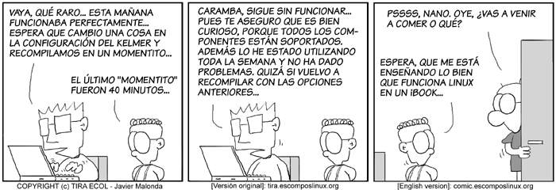
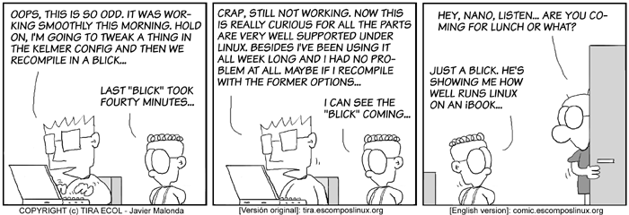
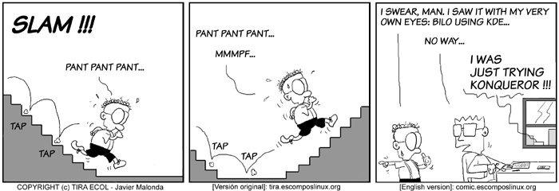
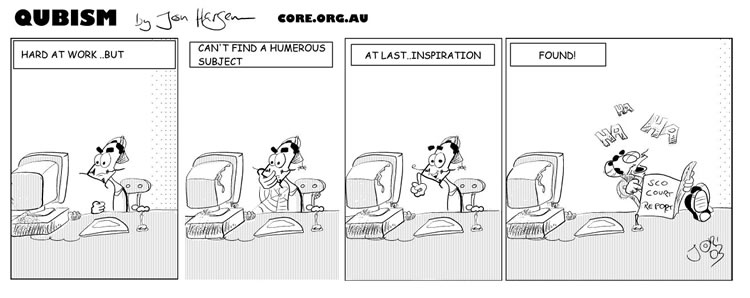

...making Linux just a little more fun!
November 2003 (#96):
- The Linux Gazette, Reborn, by Ben Okopnik
- The Mailbag
- More 2 Cent Tips
- The Answer Gang
- News Bytes, by Michael Conry
- X Fonts Display Poorly? Not Anymore, by Thomas Adam
- Sendmail AUTH/STARTTLS, by David Lechnyr
- A Brief History of Linux Gazette, by Rick Moen
- Perl One-Liner of the Month: The Adventure of the Spicy Blonde, by Ben Okopnik
- Python One-Liner of the Month, a Satire, by Mike Orr (Sluggo)
- My First Experience With Apache Axis, by Rob Tougher
- Tux in Andorra, by Alan Ward
- Ecol, by Javier Malonda
- Qubism, by Jon "Sir Flakey" Harsem
- The Back Page, by Mike Orr (Sluggo) and Thomas Adam
The Linux Gazette, Reborn
By Ben Okopnik
Nothing lasts. Favorite toys finally fall apart; old cars, the pride and
joy of your high school days (and nights!) rust out, fade away, languish for
lack of available parts. Relationships, business and personal, once so bright
and exciting, wither like houseplants exposed to the desert sunlight and blow
away like tumbleweeds.
During the past month, the Linux Gazette, as we and our readers have known
it for a number of years, has come to an end. SSC, the company who had been
hosting - and, to some degree, supporting - our efforts since shortly after
the inception of the Gazette has decided that it somehow belongs to
them, to change, adapt - or to destroy - at their pleasure. We - the people
who have volunteered our efforts to write for it, assemble it, produce it,
and publish it - disagree... and the wind of the desert howls over all,
blowing away what once was, leaving nothing but the pure idea that still
lives, independent of hardware, software, and corporate manipulation, and
existing only in the minds of those who believe in it.
The smoke of the past rises in the air, dissipates... and is gone. But the
spirit of things, if they are worthwhile, endures, and follows the original
forms. "The King is dead - long live the King!" Mark Andreessen's Mosaic
morphs into Netscape Navigator changes into the Communicator Suite mutates
through (and survives!) The AOL Corporate Hellbeast emerges as Mozilla. The
Linux Gazette, slated by SSC to slip off into a muddy swamp of CMS,
obscurity, and the inevitably short slide into destruction, arises like the
Phoenix from its intended pyre - purified, bright, and new.
Our mission, renewed and all the stronger for going through the fire,
remains what it has been all along: "making Linux a little more fun." The
core format of the Gazette will remain what it has been as well, static
(and thus universally accessible and mirror-able) HTML and text and
available for reading or download via the Web. (BONUS: For those of
you who wish to read the text version on your Palm Pilots, or other
handhelds that can read the
Palmdoc format, I will be introducing our new PDB version as well.)
Obviously, our URL and email addresses will
change - we are now located at
http://linuxgazette.net instead of the old ".com". The largest changes
are going to be under the hood, where DNS, mirroring, site structure,
author submission/input/feedback, and The Answer Gang lists live; all of
these are intended to improve the process, making it easier for all of us
to continue bringing - and hopefully improving - our content for you, our
readers.
Welcome to the new Linux Gazette.
Release Notes, by
Mike Orr ("Sluggo")
Most of the basic features of LG are in place. The following features,
however, are changed:
- We have started a new mirrors list from
scratch, and are re-adding only mirrors that confirm they are actively being
maintained.
- The authors index now has a link on
the Front Page menu since many readers don't know it exists.
- The tarballs for off-line browsing (aka. the "FTP files") are now
delivered via HTTP rather than FTP. Their new location is http://linuxgazette.net/ftpfiles/.
We figure anybody who has access to an FTP client nowadays also has access to a
web browser, so this saves us from running an otherwise-unused FTP server.
Some of the mirrors do still serve them via FTP.
- In four months, LG will reach its 100th issue. We will change the
issue-naming convention from issue## to ### for three-digit issues. This
will allow them to fall in their natural order in an alphabetical directory
listing, although the two-digit issues will follow the three-digit issues.
(You can't have everything; and LG needs to preserve old URLs that have been
bookmarked.) Likewise, the FTP files will be called lg-###.tar.gz instead of
lg-issue###.tar.gz. If you have a script that calculates the issue name,
you'll have to modify it.
The following pieces are unfinished:
- The search engine is not operational yet.
- Several of the back issues are missing their TWDT files. But that
doesn't matter since they're also missing their links to the TWDT files!
This is a problem we discovered just before press time.
- The author pages don't have links for the current issue yet.
- There's probably a couple things I don't remember....
 Ben is the Editor-in-Chief for Linux Gazette and a member of The Answer Gang.
Ben is the Editor-in-Chief for Linux Gazette and a member of The Answer Gang.
Ben was born in Moscow, Russia in 1962. He became interested in electricity
at the tender age of six, promptly demonstrated it by sticking a fork into
a socket and starting a fire, and has been falling down technological
mineshafts ever since. He has been working with computers since the Elder
Days, when they had to be built by soldering parts onto printed circuit
boards and programs had to fit into 4k of memory. He would gladly pay good
money to any psychologist who can cure him of the recurrent nightmares.
His subsequent experiences include creating software in nearly a dozen
languages, network and database maintenance during the approach of a
hurricane, and writing articles for publications ranging from sailing
magazines to technological journals. After a seven-year Atlantic/Caribbean
cruise under sail and passages up and down the East coast of the US, he is
currently anchored in St. Augustine, Florida. He works as a technical
instructor for Sun Microsystems and a private Open Source consultant/Web
developer. His current set of hobbies includes flying, yoga, martial arts,
motorcycles, writing, and Roman history; his Palm Pilot is crammed full of
alarms, many of which contain exclamation points.
He has been working with Linux since 1997, and credits it with his complete
loss of interest in waging nuclear warfare on parts of the Pacific Northwest.
Copyright © 2003, Ben Okopnik. Released under the
Open Publication license
unless otherwise noted in the body of the article. Linux Gazette is not
produced, sponsored, or endorsed by its prior host, SSC, Inc.
Published in Issue 96 of Linux Gazette, November 2003
The Mailbag
HELP WANTED : Article Ideas
Submit comments about articles, or articles themselves (after reading our guidelines) to The Editors of Linux Gazette, and technical answers and tips about Linux to The Answer Gang.
 Memory is the second thing to go, what's the first?
Memory is the second thing to go, what's the first?
Wed Oct 29 18:07:07 PST 2003
Heather Stern (
Linux Gazette Technical Editor)
Dear and gentle readers. Those who enjoy finding out what stumps the
mighty and shy among the Answer Gang. Children of all ages, ladies
and... ahem.
I've just been through the troubleshooting time of my life, trying to
learn exactly where all my memory leaks are going. Heck, I've even
chased down a few. But what I'd like to know - among you out there who
play in somewhat deeper magic than I do - is how you find out what
within a kernel is using what memory? I mean, if there aren't many
processes running, they don't look like they're using a lot, and I don't
have a ramdisk open, how can I tell what's using it up?
Of course I am interested in the answer to this question - and to be a
little more specific I'll not that I've spotted ext3fs journals and the
USB subsystem leaking so far, mainly by trial and error and science; invoking
different things while taking good notes. Yes, I'll be trying some 2.6
kernels - do read a few of the 2c Tips this time around if you're
inclined to join me in that - but I just don't think I've found
everything.
If anyone would like to write an article on a particular problem, how
it stumped you, and how you worked your way past it to learn what
really happened under the hood -- I think we'd enjoy reading it.
See our see our author submission guidelines for details, and then send mail
to articles@lists.linuxgazette.net.
Simply good tips on troubleshooting tricks not found in the average
toolbox? Send them to tag@lists.linuxgazette.net. Thanks! -- Heather
Anybody want to be a columnist?
Wed Oct 29 18:07:07 PST 2003
Heather Stern (
Linux Gazette Technical Editor)
Okay, it's been in the Mailbag for 3 months running now, with different
voices out there. Obviously there is sincere interest in a Windows
Defector column. Now what we need is an author who wants to become
its regular columnist, and can keep to a schedule.
Send a note to articles@lists.linuxgazette.net describing your views for the
column, including some posible themes for your first two or 3 articles.
Benefits include full access to the snacks in the TAG fridge, some
good-natured ribbing, and the respect of a bunch of readers planning
their next move in the OS wars.
GENERAL MAIL
LG #95 mailbag "Windows Defectors"
Mon, 6 Oct 2003 13:07:12 -0400
Ben Okopnik (
the LG Answer Gang)
Answered By Jason Creighton, Ben Okopnik, Kapil Hari Paranjape, Thomas Adam
This is in reply to "Windows Defectors" which was published in issue95
here:
http://linuxgazette.net/issue95/lg_mail.html#wanted.1
And I don't want Linux to look like Windows. The advantage of a GUI is
that it visually enumerates the possibilities. That's a mighty powerful
advantage. (Too bad GUIs don't have anything else going for them.)
[Ben]
Cute as that statement may be - and I'm definitely a CLI type of guy by
preference, so it strikes a chord - it's inaccurate. The largest
positive effect of GUIs, IMO, is their transfer of emphasis from
remembering and understanding things (command-line options, program
capabilities, etc.) to recognizing them visually. Note that this is not
much of a value to me - and doesn't seem to be to you - but the
population at large (read "non-technical users") have joyfully fallen at
the feet of the Great God GUI and sobbed in relief.
[Jason]
Doesn't the above paragraph simply say "GUIs visually enumerate the
possiblities"?
I was not kidding when I said "That's a mighty powerful advantage". It
is a mighty powerful advantage. I was being a bit sarcastic with the
"Too bad GUIs don't have anything else going for them" line, but really,
they don't.
I'm still trying to get my ideas about computers sorted out. I've been
heavily influence by Chris Crawford's writings. His latest book, "The
art of Interactive Design" is, IMHO, very good.
You can read many of his essays on his website, http://www.erasmatazz.com
[Ben]
In short, GUIs have
made computers usable by the majority - without forcing them to learn
anything past a fairly basic interface (with extensions available for
programs that require higher complexity), and Xerox PARC and Apple
deserve all the recognition and kudos they can handle. Necessarily,
there's a tradeoff: really complex (and thus, most interesting)
functions that don't fit the model are often discarded. Thus, the
dumbing-down of the available software base - at least in the Wind0ws
world; thus, the love/hate relationship between us techies (who use
computers because of the really interesting stuff at the sharp edges)
and GUIs.
Note that I am a big believer in writing to the Lowest Common
Denominator: that's how I design interfaces for all the programs I
write, at least if they're going out into the world. Where I differ
sharply from the average MS-flavored GUI is in what I consider the LCD
to be: theirs is set at about the level of the average 5-year-old (as my
gf in Baltimore expressed it upon seeing WinXP for the first time, "Fear
not, little human; Wind0ws will not harm you!");
[Kapil]
I think this sentiment is demeaning to the level of intelligence and
more importantly the capacity for learning present within most 5-year
olds. In fact the quote you give later applies to children much more
than to (most) adults---they will do smarter things if we treat them as
if they are smart.
My take on this is that the MS-flavoured GUI is aimed at todays computer
illiterate adult who is in addition incapable of responding to such a
"smart approach" having been treated like an "idiot" for a long time.
(Think management and Parkinson's law).
(All this is based on a very small case study. My daughter at the age
of 5 had less resistance to using GNU/Linux that my colleagues!).
[Ben]
Good grief, Kapil. Not in the least, certainly not by intention; I'm a
big-time fan of kids when it comes to learning ability, and am
absolutely awed by their emotional/nuance radar at that age (from the
start till a couple of years after, actually.) I don't see how saying
that certain material is set at the level of a 5-year-old maps to
5-year-olds being stupid, etc.; I smell an ax being ground. OK, to be
fair, I may have hit a hot button - sorry if so - but that's no reason
to misconscrew my statement completely out of shape.
[Ben]
I demand more
intelligence and awareness from my users. "You must be at least this
intelligent to use my programs" - nope, I don't mind being an elitist at
all.
 I believe, strongly, that people respond to software at the
level at which they've been trained to do so: treat them like they're
stupid, and they will be; treat them like they're smart - as I believe
my method does - and they will amaze you with just how smart they are.
I believe, strongly, that people respond to software at the
level at which they've been trained to do so: treat them like they're
stupid, and they will be; treat them like they're smart - as I believe
my method does - and they will amaze you with just how smart they are.
(Why, yes, I am a fan of Marshall McLuhan. Why do you ask?
The effects of technology do not occur at the level of opinions or
concepts, but alter sense ratios or patterns of perception steadily and
without any resistance.
-- Marshall McLuhan, "Understanding Media: The Extensions of Man"
[Jason]
OTOH, I really don't want to have to open a file-manager, browse to the
directory I want, select "remove", check "Force" and "Recursive", and
then click "OK" when I can just type "rm -rf whatever"
[Ben]
<grin> Poor choice of example. Midnight Commander - it may be a
text-based GUI, but still a GUI - can do shell-based stuff like that
just as quickly or quicker and more intuitively (F8 deletes files or
directories - no need to remember "-r" or whatever.) However, in
general, I agree with you emphatically: there are tasks best done (or
that can only be done) in the shell. If my "Ten Feet Tall and
Bullet-proof: Java under Linux" article, I did something rather nasty to
all the Wind0ws-based programmers: showed a Perl one-liner that fixed
several thousand broken links in about a thousand files (a real
situation that I'd dealt with shortly before, BTW.) Try that in a GUI.
[Jason]
alias rm='rm -r'
No need to remember F8 or whatever.
[Thomas]
Hmm, not a recommended thing to do, as I am sure Jason was well aware.
Aliasing command names in that manner to do something potentialy
distructive such as a recursive approach (rm -r) is never a Good Thing
(tm)
[Jason]
Doesn't the above paragraph simply say "GUIs visually enumerate the
possiblities"?
[Ben]
Err... no. It says, and I quote,
Cute as that statement may be - and I'm definitely a CLI type of guy by
preference, so it strikes a chord - it's inaccurate. The largest
positive effect of GUIs, IMO, is their transfer of emphasis from
remembering and understanding things (command-line options, program
capabilities, etc.) to recognizing them visually.
That's completely different from enumeration of possibilities - which,
incidentally, are not enumerated in a GUI but presented in menus and/or
icons. Unless you're using some special meaning of "enumerate", that is.
You're talking solely about visual presentation; I'm talking about
the influence it has on the way people use computers. Very different
scope.
[Jason]
What a GUI does very nicely, is listing (Like that word better?
)
the choices visually for you. You don't have to know ahead of time that
there's a "Frob the bits" option for something, there's a nice checkbox
right there. No need to lookup --frob in the manpage.
[Ben]
Yes, and. The GUI methodology is that the user's world is shrunk down to
a small number of choices at all times: "File/Edit/Insert/Tools/Help" or
whatever. Click on "File" and you get "New/Open/Save/Save
As/Close/Quit", etc. No need to look up the manpage, right (although you
can always click "Help", for whatever good that's going to do) - but
also no need to memorize the manpage to know which functions are
available in that piece of software.
[Thomas]
One of the reasons why I migrated from Windows was that this so called
"common set" routine whereby each menu had a common set of items actually
didn't really exist in the Linux GUI. The diversity that each app had to
offer, appealed to me much more.
[Ben]
You can always find out with just a
couple of clicks, because the world is subdivided into just a few
choices. Spell-checking? Sure, that would be under "Tools". Paste an
image? "Insert", obviously. Even if you guess wrong, it only takes
another click or two to try again.
The point is that someone with no computer skills whatsoever can learn
to operate a basic GUI in just a few minutes - and will be able to
muddle his way through other GUI-based progs, ones he's had no
experience with, on his own because the method of operation is similar
as long as the interface is consistent. (The question of whether
creating access to something as complex and potentially dangerous as
computers for non-technically-sophisticated users will be discussed
later in the Philosophy section of this course; bring your own earplugs
and set your "adult content" filter on "stun".)
[Thomas]
The problem with that is that many users may well rely solely on the use
of the GUI, and if the GUI doesn't have the necessary options that the
underlying CLI apps do, then you loose some of the functionality inherent
with the CLI application.
GAZETTE MATTERS
New Contact Information
Wed, 9 Jul 2003 13:49:25 +0100 (BST)
Heather Stern (
Linux Gazette Technical Editor)
I suppose it should be obvious, but with the site move we also have new
addresses for contact. We hope you will find them easier to use.
Thanks for your continued support during our transition, and don't
forget: we're <em>Making Linux Just A Little More Fun!</em>
-
"The Answer Gang" list - send questions and juicy answers here:
- tag@lists.linuxgazette.net
-
For the right way to ask your questions please read:
- ../tag/ask-the-gang.html
Hints: don't send us HTML, we have scripts to do that.
Use a real subject line. Tell us what you tried. Thanks.
-
To join The Answer Gang please read:
- ../tag/members-faq.html
If people have any News for the News Bytes editor:
bytes@lists.linuxgazette.net
Michael Conry is our current News Bytes editor.
Folks who want to be mirrors or confirm that they are still mirrors
should contact:
mirrors@lists.linuxgazette.net
Ben Okopnik is our current Mirrors Coordinator.
To keep up on news about mirroring scripts and being a mirror,
please subscribe to lg-mirrors:
http://linuxgazette.net/mailman/listinfo/lg-mirrors
-
Gazette Translators (thank you all!) should subscribe to
lg-translators:
- http://linuxgazette.net/mailman/listinfo/lg-translators
-
If people want to submit articles:
- articles@lists.linuxgazette.net
-
General questions about issues or comments on released issues:
- gazette@lists.linuxgazette.net
-
To be kept up on news about the Gazette in general, subscribe to
lg-announce:
- http://linuxgazette.net/mailman/listinfo/lg-announce
This page edited and maintained by the Editors of Linux Gazette
HTML script maintained by Heather Stern of Starshine Technical Services, http://www.starshine.org/
Published in Issue 96 of Linux Gazette, November 2003
More 2 Cent Tips
See also: The Answer Gang's
Knowledge Base
and the LG
Search Engine
 The Wonderful World of 2.6
The Wonderful World of 2.6
Mon, 14 Jul 2003 11:42:39 -0700
David Benfell (
co from trek.parts-unknown.org)
Question by trek (trek from trek.starshine.org)
Of course a number change doesn't really mean all that much more than
that Linus Torvalds might be trying to push 2.6 out the door a little
faster than what happened with 2.4. Also, for what it's worth, Joe
Pranevich has just put out a draft version of the Wonderful World of
Linux 2.6, posting this to the kernel list:
|
...............
Hello,
I've recently put together the first draft of a features document
describing the changes in Linux 2.6. (I did similar documents for
both Linux 2.2 and Linux 2.4.) It's based almost entirely on
BitKeeper changelogs (with clarifying information pulled from the
lists and the web), so there is a chance that I misunderstood
something or that I missed something else entirely. Please give it
a look over and if you see anything that needs a look-over, please let
me know. As it stands now, I feel pretty good about how it
turned out so I'm finally comfortable mailing what I have around.
(There are still a couple areas that need expanding on, I think...)
As of right now, you can find the latest versions of the document
available online.
Text version: http://www.kniggit.net/wwol26.txt
Tersely formatted HTML: http://www.kniggit.net/wwol26.html
Please let me know what you think.
Thanks,
Joe Pranevich
jpranevich<at>kniggit.net
...............
|
Using 2.6 kernels - get the right tools
Sat, 25 Oct 2003 00:50:59 -0600
Heather Stern (
Linux Gazette Technical Editor)
You need a new modutils variety entirely for 2.5x, and 2.6 kernels.
Under Debian the package name to fetch is called
module-init-tools
The upstream source can be gotten from
ftp://ftp.kernel.org/pub/linux/kernel/people/rusty/modules
As LG goes to press the current available is 0.9.15-pre2.
The nice thing is, it doesn't conflict with modutils.
2.6 kernel - use the latest or expect a leak
Wed, 29 Aug 2003 10:50:59 -0600
Heather Stern (
Linux Gazette Technical Editor)
The current version of 2.6 (test 9) fixes some nasty memory leaks in the
VFS layer for filesystem management. If you've been experimenting along in
the 2.5.x/2.6 series, an upgrade is highly recommended.
[LG 92] 2c Tips #5 - PDF conversion
Mon, 7 Jul 2003 14:09:58 +0100 (BST)
Thomas Adam (
The LG Weekend Mechanic)
Question by Walt R (wmreinemer from tns.net)
In issue 92 Mike Martin asked: Has anyone any ideas on converting PDF's to decent text.
Several of the Gang answered with useful programs.
-- Heather
A loyal reader, Walt R, has sent in:
The tool pdftotext works, but
all formatting disappears.
Yes, an unfortunate side-effect. You might have to edit it by hand, to
re-instate formatting...
[LG 92] help wanted #1 - BiDi and SMARTDRAW
Thu, 03 Jul 2003 22:55:54 +0100
Jimmy O'Regan (
the LG Answer Gang)
In issue 92, Daniel Carneiro do Nascimento's question was pubbed in the
Mailbag's "Help Wanted" section.
-- Heather
BiDi in Wine is still being actively worked on, and is nowhere near
complete. You should resend your e-mail to wine-devel@winehq.com to get
to the people who /really/ know Wine.
[LG 92] help wanted #2 - Squid and FTP
Thu, 17 Jul 2003 12:38:02 +0200
Velibor Glisin (
velibor from uns.ns.ac.yu)
Tru IPcop. It is firewall router. EVERY connection from inside is
working and You are stealth to outsiders.
Not closed... stealth!
http://www.ipcop.org
Try. It is the best I ever used. I have had proxy two months before...
now never again
Bye!
[LG 95] help wanted #2 - webdialer
Tue, 7 Oct 2003 11:54:42 -0400
vlad.dvoichenko-markov (
vlad.dvoichenko-markov from verizon.com)
My solution may or may not be OK for you. I have a little P75 laptop that
acts as a NAT for my local area network. It runs OpenBSD with user PPP. I
am unsure whether user PPP is available for Linux. Maybe you can use pppd
and ipchains (or whatever its called now).
User PPP is configured in "auto" mode such that a request makes it dial out
if its not connected. So if my wife requests an html page, PPP dials out,
connects, and she gets her page. She uses Windows and is NATed thru the
P75.
No users are on the P75. I have had two windows boxes, one FreeBSD box, and
the P75 (ntpd) all sharing the same internet connection concurrently.
Format of Binaries in Linux....
Tue, 7 Oct 2003 04:02:32 -0700 (PDT)
sarfraz b (
bsarfraz_2000 from yahoo.com)
Answered By Thomas Adam, Jim O'Regan, Karl-Heinz Herrmann
Hi,
Could you please help me out to know the format of binaries in Linux.
thanks in advance.
regards
Sarfraz
[Thomas]
From last month's "Greetings from Heather Stern":
The same goes for you students out there with a take home light quiz. We
can spot those a handful of kilometers away, give or take a mile. Maybe
you should cc: your professor when you ask us the question, and he can
give us the passing marks in your class. The point is to learn a few
research skills - so for such questions, search google. Search our
KnowedgeBase - it's part of what it's here for. Search TLDP.org and
freshmeat if the problem is really about Linux.
To give you a hint, there's two types: ELF and a.out
[Jim O'Regan]
-
There's a nice discussion in the FreeBSD handbook
- http://www.freebsd.org/doc/en_US.ISO8859-1/books/handbook/binary-formats.html
[K.-H.]
try also:
http://www.linuxjournal.com/article.php?sid=1059
as a starting point. Came up in google easily enough.
MS Research vs. open source
Mon, 20 Oct 2003 04:31:41 +0100
Jimmy O'Regan (
the LG Answer Gang)
I was looking at Dashboard (http://www.nat.org/dashboard), and noticed
a link to a Microsoft Research project, MyLifeBits
(http://research.microsoft.com/barc/mediapresence/MyLifeBits.aspx). I
had a look around the site, and noticed that a lot of the projects have
open source equivalents - some of them older than MS's version - and
figured I'd make a list. (Before Dashboard there was the Remembrance
Agent for Emacs, which I think outdates MyLifeBits).
* IntelliShrink (http://research.microsoft.com/~simonco/intellishrink.aspx)
Shrinks e-mail to SMS abrv8tns. Free version: email2sms
(http://adamspiers.org/computing/email2sms)
* World-Wide Media eXchange: (http://wwmx.org)
Tools for stamping image files with their location, as well as tools for
converting location information from GPS handsets to GPX. GPSBabel
<http://gpsbabel.sourceforge.net/>; can write GPX files, you can use
exiftags <http://johnst.org/sw/exiftags/>; to write this to an image.
* AutoDJ (http://research.microsoft.com/~jplatt/abstracts/autoDJ.html)
Automatically generates music playlists. Cymbaline
(http://silmarill.org/cymbaline.htm) does this.
* Media Computing (http://research.microsoft.com/mc)
which has several subprojects, including Audio Content Analysis, which
Maaate (http://www.cmis.csiro.au/maaate) does; Face Detection, Tracking
and Recognition, which OpenCV
(http://www.intel.com/research/mrl/research/opencv) does; Digital
Album, which facilitates the annotation of photos, and searching based
on these annotation - Gnome Storage
(http://www.gnome.org/~seth/storage) can do this, among other things;
Video Content Analysis, Representation and Access - VideoQuery
(http://videoquery.sourceforge.net) can do this.
* Mobile IPv6 (http://research.microsoft.com/mobileipv6)
Mobile IPv6 support is available for Linux - MIPL
(http://www.mipl.mediapoli.com)
* Advanced Compiler Technology (http://research.microsoft.com/act)
Optimising C# compilation. Mono (http://www.go-mono.net) follows
Microsoft's research in this area, and generally implements it.
* Natural Language Processing (http://research.microsoft.com/nlp)
There are several projects available for NLP, for example OpenNLP
(http://opennlp.sourceforge.net)
* Camera Calibration (http://research.microsoft.com/~zhang/Calib)
OpenCV does this too.
* Audio fingerprinting (http://research.microsoft.com/~cburges)
Free Tantrum: (http://sourceforge.net/projects/freetantrum)
* Pastry (http://research.microsoft.com/~antr/Pastry)
A peer to peer system - it's open source, and written in Java, so it
should run on Linux.
* IceCube (http://research.microsoft.com/camdis/icecube.htm)
IceCube allows for disconnected use by mobile clients... just like CODA
(http://www.coda.cs.cmu.edu) does.
* .NET Generics (http://research.microsoft.com/projects/clrgen)
Mono is working on this too.
* SML.NET (http://www.cl.cam.ac.uk/Research/TSG/SMLNET)
SML.NET is Open Source
* The Social Computing Group (http://research.microsoft.com/scg) has a
few projects which have open source equivalents --
** Sapphire: is pretty similar to Gnome Storage
** Conversation clusters: is similar to the vfolders in Ximian's Evolution
** Smart Previews: looks almost exactly like the previews in KDE 3.1
** Shared browsing: You can do this in Mozilla with DerTandemBrowser
(http://dertandembrowser.mozdev.org)
ssh -L 1234:localhost:22 remotehost -s sftp
Wed, 8 Oct 2003 14:36:40 -0400
Ledford, Shaun K [IT] (
shaun.k.ledford from citigroup.com)
Answered By Karl-Heinz Herrmann
The above command is supposed to tunnel all request on port 1234
to secure port 22 and allow a SFTP.
So.. on localhost I should be able to do:
"ftp localhost 1234" and connect via ssh to remotehost ftp remote files.
The problem is, it doesnt work. Is such a thing possible?
Thanks
Shaun.
[K.-H]
well -- I've no idea of sftp as such. according to the manpage this feature
is SSH2 only. Are you sure your connection is protocoll level 2? Check with
"-v".
To put localhost in there confused me for a moment, but it seems to be fine.
You might want to out a real hostname to make it less confusing. Assuming
your ssh is to the ftp-target "remotehost" would do fine.
I get the error:
khh > ssh -L 1234:localhost:22 dachbox -s sftp
usage: sftp [-vC1] [-b batchfile] [-o option] [-s subsystem|path] [-B
buffer_size]
If I force level 2:
ssh -2 -L 1234:localhost:22 khhlap -s sftp
it just sits there. ftp localhost 1234 gets me a ftp interface which is
unconnected. I don't have an ftpd running so I can't test further.
It would be a lot easier to answer anything if you would have sent the
error message or what exactly does not work.
I'm not familiar with the ssh2 "-s" option. I've never used it. But I've
successfully tunneled (using -L) http, smtp, ssl-imap and news ports through
a firewall -- so basically it should work as long as ftp is in passive mode.
[LG #95] answer gang: "a linux solution for the office"
Fri, 17 Oct 2003 01:38:47 -0400
Dave Phillips (
family_of_phillips from yahoo.com)
Answered By Thomas Adam, Ben Okopnik
Reading through the answer to this question I noticed that the hyperlink
for http://ltsp.org was incorrect, included a >, as well as the link for
SIAG office suite was completely wrong. He said http://www.siag.org when
it should have been http://siag.nu.
You guys are doing a great job, but... I think somebody should take the
time to make sure the links are correct at least to avoid sending people
off on snipe hunts.
[Thomas]
OK, that "he" to which Dave refers was actually me. However, as this
goes to press, I cannot help but feel malace towards the tone of this
e-mail. As Ben rightly goes on to say, don't complain or expect anything
to be resolved unless you yourself can do something about it. This is a
volenteer effort afterall.
OK, I admit that I did guess the URL for siag office, but I'm sure that
you, the gentle reader, know how to use google.com/linux? I certainly
hope so...
[Ben]
Cool idea - thanks for voluntering! We'd love to have a proofreader. I
have to warn you, though, that the quantity of mail, submissions, etc.
that we get can be fairly overwhelming, so I hope you're offering a
significant chunk of your time.
HINT: we're all volunteers here. Complaining about someone not taking
the time - when that is the specific resource we contribute (especially
since a number of us are consultants and normally get paid for that very
resource) - is ungracious at the very least.
Helpful suggestions are always welcome. Complaints that aren't coupled
with an offer to help, well, our /dev/null stays hungry no matter how
many pretzels we feed it...
[Thomas]
I almost got my hand bitten off the other day when I tried to feed it
all the MIME-encoded e-mails we get. It seems that /dev/null hates them
even more than we do
I'd watch your fingers in the future, Ben.
That /dev/null device doesn't take any passengers....
LD_DEBUG coolness
Wed, 15 Oct 2003 15:50:50 -0600
Jason Creighton (
androflux from softhome.net)
Hi,
I was reading comp.unix.programmer and came across a comment about setting
the LD_DEBUG environmental varible to 'help' and running a dynamic
executable. Okay, let's try it:
~$ export LD_DEBUG=help
~$ ls
Valid options for the LD_DEBUG environment variable are:
libs display library search paths
reloc display relocation processing
files display progress for input file
symbols display symbol table processing
bindings display information about symbol binding
versions display version dependencies
all all previous options combined
statistics display relocation statistics
help display this help message and exit
To direct the debugging output into a file instead of standard output
a filename can be specified using the LD_DEBUG_OUTPUT environment variable.
See attached ls_output.txt
Fun thing to play with. And who knows, I might actually have a use for
it someday.
[Ben]
*Nice!*
Thanks, Jason - that's a really fine tidbit. It now reposes comfortably
in my toolbox in the little niche by "strace" and keeps it from rolling
around and rattling. I've spent the past week teaching people how to use
the "grep" drill, the "awk" chopsaw, and the "sed" jackhammer, and can
appreciate the finesse of a precision instrument all the more for that
reason...
ximian email backups
Thu, 9 Oct 2003 04:10:44 -0700 (PDT)
- E J - (
vts_ej from yahoo.com)
Answered By Thomas Adam, Jim Dennis, Raj Shekhar
Could someone let me know what files I need to pull
from my current system (where I get my email) to a new
system? I would like to backup all the data and
restore it to a new system and get the email over
there; yet, have all my email folders/emails restored
to the new system.?
Thanks in Advance
EJ
[Raj Shekhar]
If you are using evolution , then in your home directory you will find a
folder called evolution which will have all the mails + contacts + other
settings. If you want to just find your emails, you will find them in
~/evolution/local/Inbox .
A piece of advice, if you back up your mail to a CD and then restore it,
you will have the files which are read-only. I would suggest that you
tar and gunzip your evolution folder before burning it to the CD , that
way your file-permissions will be preserved.
[Thomas]
Actually, that is inaccurate -- one can preserve permissions on CD quite
easily, if they're copied with "cp -p". Also, why put them on CD at all?
You could easily move them to another partition, which would preserve file
permissions as well.
[JimD]
More obviously you can simply create an archive (tar, cpio, dump, pax)
which will preserve the ownership and permissions. That's what Unix
archives do, archive data with meta-data.
Then burn the .tar (or whatever) file into your CDR. Basically you'll
create an ISO containing just one or a few archive files.
(newbie) alsa module ?
Wed, 9 Apr 2003 11:37:33 -0700
Rick Moen (
the LG Answer Gang)
Question by JK Malakar (cave_man from hotpop.com)
here is a confusing problem. I like to insert the alsa module in my woody.
but the alsa-driver source has been located at
*/usr/src/modules/alsa-driver* & the kernel source at
*/usr/src/kernel-source-2.4.18*
make xconfig doesn't show the alsa option. do I need to move the alsa-driver
at a particular directory (?) under the kernel-source to get the alsa option
during make xconfig ??
-
All of this is covered at
- http://www.sonic.net/~rknop/linux/debian_alsa.html
Linux CD trial
Sun, 20 Jul 2003 16:31:32 +0100
Neil Youngman (
n.youngman from ntlworld.com)
Question by Amgam3 (amgam3 from arabia.com)
Hi,
I am interested in Linux and open source in general.I am new to linux, I
read more about it but till now
havn`t tried it. I downloaded small distributions like ' small linux '
but didn`t work. Having only
dial up connection to the Internet it is difficult to download those big
distros over analog phone,
so what I ask is can you send a free CD of a distro of linux to get my
feet wet or point me out
to some sources where to find this.
-
I suggest buying a knoppix CD from
- http://www.linuxemporium.co.uk/index.php?PAGE=4
HTH
Neil Youngman
For those in the US, Cheap Bytes seems to carry it also. And a few more
distros, too, in case a particular one strikes your fancy.
-- Heather
Sendmail 8.12.9 - recreating db files
Sat, 12 Jul 2003 14:26:36 -0500 (COT)
John Karns (
the LG Answer Gang)
Question by francis matsika (tsikaz from yahoo.com)
just finished installing Sendmail, but now
if i run make all in /etc/mail after running
/usr/bin/newaliases, i am getting the following error:
make: No rule to make target 'domaintable.db', needed
by 'all' . Stop
Info
rehat 7.2
Rather than DL'ing the pkg in parts via ftp, I think it would be much more
striaght forward to DL the pkg as a tar or rpm and install from that.
plz help --- Rh9 connecting to ISA server
Thu, 10 Jul 2003 10:41:41 +0100 (BST)
Mike Martin (
the LG Answer Gang)
Hello
I recently installed RH 9 and i have a LAN
running on ISA server, tried to connect it but
could't.
somebody told me configure samba
so i did and now i could also see the computers on
my
network
and even the PING to the server is OK
when i try to browse the network it gives me:
"HTTP 607 proxy Authentication required,
The ISA server requires authorization to fullfill
the request. Access to web proxy service denied (12209)"
it will be very helpful if
anyone can plz suggest me a way out of this problem
Excuse me being a Newbie
Weather i have to configure the ISA (a bit dificult
to access for me) or is there any other way
plz lemme know in either cases
Thanks
FAHAD
-
see this
- http://ibiblio.org/gferg/ldp/Web-Browsing-Behind-ISA-Server-HOWTO.html
Burning ISO's under windows
Sat, 19 Jul 2003 19:58:39 +0000
Jim Dennis (
the LG Answer Guy)
Question by Graham Banks (gjcbanks1 from netscape.net)
Having read the previous answers to this question I would like to
recommend a software program taht I recieved with my Sony Recorder, '
B's Recorder Gold5 ' http://www.bhacorp.com . I found this program to
be very easy, I just loaded the program, cancelled the wizard. Next I
found the ISO file and dragged into the bottom layer, then from the file
menu I selected record and that was it a perfict disk.
Having read mail to this address since before it was a list I would like
to recommend that software recommendations to MS Windows and Mac OS
(non-portable to other forms of UNIX) products be sent just to the
querent and other interested parties.
This is linux-questions-only; the LINUX Gazette "Answer Gang."
Naturally, we'd like to encourage a "Linux-answers-mostly" policy.
A quick search of http://www.freshmeat.net on "ISO CD burn":
http://freshmeat.net/search/?q=iso+cd+burn§ion=projects
... gives me a list of about 25 ISO CDR programs --- I'm sure there
are more than that it's a popular programming and scripting exercise.
Almost all of them are simply GUI, command line or curses (text dialog)
driven front ends to Joerg Schilling's cdrecord and mkisofs
Some also support cdrdao, mkybrid, or related command line tools.
As for DVD-R/RW and DVD+R/RW drives, the support for them seems to be
a bit sketchy. I think they're getting closer but I still haven't
gotten my Ikebana DVD+R/RW drive working yet (except as a CD-R/RW).
(I haven't tried it recently either).
See also the "Best of ISO Burning Under Windows" in our KnowledgeBase.
-- Heather
mail files.
Thu, 3 Jul 2003 11:15:37 +0200
Jimmy O'Regan (
the LG Answer Gang)
Question by Hans Borg (Hans.Borg from physics.umu.se)
Sorry if this is not a "pure" linux item, but I take the chance.
Am trying to convert (import) Eudora (version 3.0.5) .mbx files to the KDE
Kmail. For this I have used the Eudora2Unix.py script. That seems to
work. It reports eg. 529 messages found for a given "folder".
The problem: When having moved the converted .mbx to the appropriate
Kmail folder, I only see the first mail. I can guess that it depends on
the fact that Kmail keeps each mail in a separate file, while my Eudora
stacks them in a single file referred to as folder (thus not a real
folder in normal terminology). It should not be too hard to split the
messages into separate files, but then comes the file naming convention
in Kmail. What I have seen, it looks like a fancy (many digits) running
number.
So, have I missed something with Kmail (option to set) or are there any
s/w available to fix eg. messages -> separate-files.
Hoping for some hints.
Have you tried kmailcvt?
Thanks for your answer.
I have found out the problem. KMail have two folder modes,
maildir and mbox. I happened to move the Eudora mbox folder
into a KMail maildir folder.
What to choose? Mac or PC?
Thu, 20 Feb 2003 12:44:31 -0600
Hubert Chan on debian-laptops (
hubert from uhoreg.ca)
Question by Nate Bargmann (n0nb from networksplus.net)
Just use a repeat_type of raw, so that XFree86 sees exactly the same
thing as it would see if there was no GPM. BTW, I use a mouse type of
autops2, and GPM can recognize the middle button.
Hey, thanks, Hubert. That did the trick. Sometimes I wish tips like
this were a bit more clearly documented, but I digress...
ok, you said winmodems don't work right? - Quick and Dirty Kernel Compile
Tue, 8 Jul 2003 11:01:12 +0100 (BST)
Mike Martin (
the LG Answer Gang)
Question by fire wing (deathmune from hotmail.com)
www.linmodem.org.
i downloaded the driver (most lucent winmodems that aren't AMR
work, )
On the page you can load a binary driver, which means you dont have
to recompile (check the versions tho)
now, i need help working with this beast. i'm using redhat 8.0. it
says i
have to recompile the kernel (i think) and since i am a complete
newbie at
working this stuff (the more i go into linux, the more i learn)
could you
give me some cut and dry instructions on how to install this driver
as
either a module or as a full part of the kernel. I have the kernel
sources
from kernel.org's website (i don't know if the headers come with it
though,
so i need help with this too). i'm an ultra newbie at linux, but in
windows
i am an advanced user.
Quick and dirty RH recompile
First dont use kernel.org sources - RH patch to high heaven.
get kernel source rpm from
ftp.redhat.com/pub/redhat/linux/updates/8.0/en/os/i386/
rpm -ivh <package> to install
cp /usr/src/linux-2.4/configs/<your chosen arch config>
/usr/src/linux-2.4/.config
cd /usr/src/linux-2.4
make menuconfig
then make any changes
save
then
make dep&&make clean&&make bzImage&&make modules&&make
modules_install
then when this is all done
cp boot/arch/i386/bzImage /boot/vmlinuz<your name for kernel here>
cp System.map /boot/System.map<same version as above>
rm -rf /boot System.map
ln -s /boot/System.map etc //boot/System.map
mkinitrd /boot/initrd-<version of kernel>.img version number
then edit /boot/grub.conf to add these details as in the current
entries.
Although RH normally add so many modules you may not need to
recompile.
If this does not work you may not have the dev packages you need.
you need at least
gcc
make
bison
glibc-kernheaders
glibc-devel
ld
cpp-devel
libgcc-devel
(this is from memory so you could need a few more - rpm should tell
you)
thank you for the support.
Cool toy of the week: rlcompleter2
Fri, 11 Jul 2003 06:15:41 +0000
Jason Creighton (
the LG Answer Gang)
Answered By Jim Dennis
http://codespeak.net/rlcompleter2
Tab completion for Python. Cool stuff, now all I can think about is how to
implement this in Ruby.
I've been using the standard rlcompleter for years. What does
rlcompleter2 add to the the standard module?
/me browses(*)
Ahhh, I see; it's sort of like Ian MacDonald's bash-completion package.
It adds context sensitive completions and adds support for displaying
the docstrings (.doc__ attributes for any function, module, or class)
and apparently it displays the function signatures (argument list)
as well.
I'll have to play with it.
/me downloads, plays, configures
Now my PYTHONSTARTUP for python2.2 and python2.3 are set to
~/.pythonrc.rlcompleter2
Thanks.
The startup for interactive sessions is a little slower. there is a
noticeable hesitation during rlcompleter2 .setup() but it's not bad
enough to worry about.
- /me is a IRCism --- traditional IRC clients have a /me command that
highlights one's statement as an "action" --- a description rather
than an utterence
Sendmail Problem
Wed, 16 Jul 2003 20:05:05 +0000
Jim Dennis (
the LG Answer Guy)
Question by Francis Matsika (frmatsika from yahoo.co.uk)
I getting this error : Connection failed to
192.168.0.1,25 Connection refused if i try to sent
mail straight from the server using pine
192.168.*.* are unroutable on the Internet (as per RFC191
. It may
be that the server to which you are connecting is refusing you due to
some internal (anti-spam and/or anti-relaying) configuration rules.
If i try to from windows workstations, the client are
failing to get a response from the server
I checked sendmail status and it is running
I also restarted sendmail and i can only use pine
twice and the third time it will throw the same error
if i run ps -aux | grep sendmail , there is this
process [ sendmail < defunc and at one time there was
sendmail rejected connections running , which i do not understand
I see you've tried to provide additional information but a careful
perusal reveals that you don't give enough RELEVANT information to
actually answer your question.
Try to formulate a better question after you read the following
LDP (Linux Documentation Project) HOWTOs and Guide chapters:
-
Network Administrator's Guide: E-mail
- http://tldp.org/LDP/nag/node186.html
-
Linux E-mail User's HOWTO
- http://tldp.org/HOWTO/Mail-User-HOWTO
-
Linux Administration Made Easy: Sendmail Configuration
- http://tldp.org/LDP/lame/LAME/linux-admin-made-easy/sendmail-upgrades.html
-
ISP-Connectivity-mini-HOWTO: Electronic Mail on your Linux Box
- http://tldp.org/HOWTO/mini/ISP-Connectivity-3.html
-
Forwarding Mail to a Relay Host
- http://tldp.org/LDP/nag/node247.html
-
Linux Mail-Queue mini-HOWTO: Delivering e-mail
- http://tldp.org/HOWTO/mini/Mail-Queue-4.html
... note: I've tried to arrange these roughly in the best order for you
to read them. Basically the first one should explain the concepts and
terminology a little better, then next one might just help you solve
the problem, and the others may help if you're still fighting with it
beyond that. In other words, I don't expect you to read all of those,
just read enough to solve the problem (or at least to be able to better
explain it).
Help needed - Simputer
Wed, 9 Jul 2003 11:39:20 -0700
Heather Stern (
Linux Gazette Technical Editor)
Question by Mythili Srinivasan (s_mythili from da-iict.org)
Hi!
I'm in need of your help. I'm trying to flash some programs into
Simputer and tried using pfc. The configuration for serial communication
is 115200/9600 baud and I get the following response on pfc's debug window.
Debug Messages are Displayed Here..
At first it wasn't clear how this is Linux-y...
> Using port /dev/ttyS0
> Please wait... Initializing....
> This will take about a minute..
> []
> []
> [This is a PicoPeta Simputer...you are assimilated]
:D
> Simputer booted
> Preparing...
> Sending [init 2]
At this time the progress bar stops and the application hangs forever.
Similarly, when I tried using minicom(9600 8N1),I get response from
simputer till the 'Simputer login' prompt and when I entered the login
name, the getty process in Simputer doesn't respond with authetication
validation or anyother message it is suppose to send. I saw the
Is it expecting a PPP connection? or does it have the wrong parity and
databits setting?
rc.sysinit file which spawned a getty with 9600 baud... As in someother
place where I was looking for the solution mentioned that we got to set
the serial port for 115200 baud, I tried to change in the file even
after providing write permission but couldn't write on to the file. So,
You almost certainly have to be root to write into /etc/inittab, and I
cannot imagine any good reason that a regular user account should have
writable access to it.
rc.stsinit itself might not be the right place to put this.
I killed the old getty process and spawned one with the new baud rate.
Set the ispeed and ospeed to same... But,it doesn't work. One thing
clean about the scenario is that from simputer the messages reach the PC
which the other way it is not. It would be of great help if I can get it
working.
Thanks in Advance.
regards,
Mythili
The most popular program to run on Linux boxes to answer on their serial
port, is called 'mgetty'. It has a man page which is amazingly enough,
usually kind of useful, and the typical /etc/inittab has an example line
about how to activate it, commented out. getty is good, but mgetty has
some special features for dealing with serial lines.
115200 is a common max speed for old style serial ports. 9600 is the
bits frequency if using common voice (300 baud or so) with a fairly
popular old line discipline to get bits on different parts of the
carrier wave. Compression tricks are most of what gives faster modems
their claimed speed.
Hope that helps.
telnet prb in linux7.3
Fri, 11 Jul 2003 09:12:11 +0100 (BST)
Ashwin N (
yodha8 from yahoo.co.uk)
Question by S. Rathana Prasad (prasad from jivainfotech.com)
hi every one,
i have two systems one is windows2000 advanced server and another is
linux7.3
iam unable to access it through telnet as superuser.
Access which one of those two?
Maybe you are trying to login as "root" directly at the telnet login. This is
not allowed. You can login as an user and then change to root by using the "su"
command.
Windows
Thu, 24 Jul 2003 09:06:29 +0100 (BST)
Thomas Adam (
The LG Weekend Mechanic)
Question by Frederick Feyertag (fredf from execpc.com)
Dear Mr. Dennis,
Actually, the days when TAG was a one-man-band have long since diminished.
You have actually reached a whole "gang" of us who try and answer
questions based on what querents write in.
I know very little about Linux. I've ran it a few years ago on a 386.
However at the time there weren't too many applications for it. I want a
reliable CAD station but, I have only Windows programs. Does Linux run
Windows applications reliably?
Umm, I think reliably is the operative word. If it is stability you're
after then I would recommend running that application in its native
environment -- windows. However to answer your question, WINE is what
you're after:
http://winehq.com
That does a pretty good job at running Windows apps. There is also the
option of using VMWare if the computer you're connecting to is remote.
If you look through our back issues and also check the KB out:
http://www.linuxgazette.net/tag/kb.html
I remember there being a thread on CAD software for Linux.
True. In fact we have so many CAD and CASE programs that Freshmeat
has to seperate sections for various types. And then there's
modelling.. I understand that you can get very nice, if imprecise,
3D effects with these apps.
-- Heather
LJWNN Tech Tips
Mon, 27 Jan 2003 15:41:22 -0800
Linux Journal Weekly News Notes (
ljwnn from linuxjournal.com)
Apologies, folks - I had published several large LJWNN Tech Tips in
issue 93, but I must have been in too much of a hurry. A few of them were
damaged there, thanks to a formatting mistake on my part. Sorry! Here
are the repaired Tips, please enjoy them.
We will probably not republish Linux Journal Weekly News Notes tips in
future issues of Linux Gazette.
-- Heather
Wireless but Wary - Print Safely
If your main home network is a wireless network, you don't want to
wake up in the morning and find some joker has printed many pages of
stuff to your networked printer. Put the printer on a wired, private
network segment, and print to it with ssh.
To do this, install this script as lpr on your wirelessly connected
laptop:
See attached lpr-ssh.bash.txt
Capture Those Errors
(Thanks to the GAR project:
http://www.lnx-bbc.org/README.html for the tip.)
If you have a lengthy command-line task, such as building complicated
software, and need to catch an error that whizzes by in the middle,
use script. It will run a shell and log all input and output to a file
called "typescript" that you can then search or submit with a bug
report.
Dave's Not Here
The vacation program lets you send an automatic message when you'll be
away from your e-mail. You can see who received your message with
vacation -l | cut -d ' ' -f 1 - > people_who_got_vacation_message
Cure Num Lock Madness
When you boot Linux, the kernel turns off Num Lock by default. This
isn't a problem if, for you, the numeric keypad is the no-man's-land
between the cursor keys and the mouse. But if you're an accountant, or
setting up a system for an accountant, you probably don't want to turn
it on every single time.
Here's the easy way, if you're using KDE. Go to K --> Preferences -->
Peripherals --> Keyboard and select the Advanced tab. Select the radio
button of your choice under NumLock on KDE startup and click OK.
If you only run KDE and want Num Lock on when you start a KDE session,
you're done. Otherwise, read on.
To set Num Lock on in a virtual console, use:
setleds +num
If you choose to put this in a .bashrc file to set Num Lock when you
log in, make it:
setleds +num &> /dev/null
...to suppress the error message you'll get if you try it in an xterm or
over an SSH connection.
Finally, here's the way to hit this problem with a big hammer--make
the numeric keypad always work as a numeric keypad in X, no matter
what Num Lock says. This will make them never work as cursor keys, but
you're fine with that because you have cursor keys, right? Create a
file called .Xmodmap in your home directory, and insert these lines:
(from a Usenet post by Yvan Loranger:
http://groups.google.com/groups?hl=en&lr=&ie=UTF-8&selm=3BFD087F.2000300%40iquebec.com&rnum=3+)
See attached numpad.Xmodmap.txt
The last line takes the now-useless Num Lock key and makes it an extra
Escape key. If your favorite accounting software uses one of the F
keys frequently, you might prefer that.
The number to the left of the equals sign is an X "keycode", the key
on the keyboard you pressed, and the number or name to the right is an
X "keysym", the character or function X thinks it is. You don't have
to look these up in some X manual. To find out the keycode and keysym
for any key, run xev in an xterm, move the mouse to the small white
xev window and watch the keycodes and keysyms scroll by in the xterm.
SSH a little too forward, use more keys
If you'd like to do SSH port forwarding with a passphrase, but require
a passphrase to run commands, make a separate key for port forwarding
only.
Dramatis personae
dmarti: example user name
bilbo: your desktop system
frodo: host running sshd
linuxjournal.com: some web site
Port forwarding also is called tunneling, so I'll call the key
"tunnel". cd to your .ssh directory and create the key:
dmarti@bilbo:~/.ssh$ ssh-keygen -t dsa -f tunnel
Generating public/private dsa key pair.
Enter passphrase (empty for no passphrase):
Enter same passphrase again:
Your identification has been saved in tunnel.
Your public key has been saved in tunnel.pub.
The key fingerprint is:
77:b4:02:d9:32:c2:cc:18:58:c3:23:0a:13:46:a7:fa dmarti@capsicum
Now edit tunnel.pub and add the following options to the beginning of
the line:
command="/bin/false",no-X11-forwarding,no-agent-forwarding,no-pty
That means this key is no longer any good for anything but port
forwarding, because the only command it will run is /bin/false, and it
won't forward X or agent commands.
sshd understands the options only when reading the key from
authorized_keys, but if you put the options into the original .pub
file, they'll stay with the key wherever it goes.
Now copy tunnel.pub to the end of your .ssh/authorized_keys at all the
hosts to which you want to tunnel, and try it:
dmarti@bilbo:~$ ssh -i ~/.ssh/tunnel frodo
Connection to zork.net closed.
No errors, nothing runs; that's what you want. If you get errors, you
may have mangled the authorized_keys file on the server end; if you
get a shell you need to check and fix the options.
Another possibility is that if you're running with ssh-agent and have
the SSH_AUTH_SOCK environment variable set, you could be using a key
provided by ssh-agent instead of the one on the command line. Put env
-u in front of the command line to be sure not to use the agent.
Tunnel time! Let's use the long-suffering linuxjournal.com web server
as a guinea pig and make a tunnel:
dmarti@bilbo:~$ ssh -i ~/.ssh/tunnel -N -L 8000:linuxjournal.com:80 frodo
To review that command line:
- -i ~/.ssh/tunnel to use our tunnel-only ssh key
- -N to not run a command (this is necessary, otherwise SSH will run
only /bin/false and exit)
- -L 8000:linuxjournal.com:80 to forward local port 8000 to port 80
on linuxjournal.com.
- And finally, the hostname to which we're making the connection--it
doesn't have to be the same as the host to which we're tunneling.
This page edited and maintained by the Editors of Linux Gazette
HTML script maintained by Heather Stern of Starshine Technical Services, http://www.starshine.org/
Published in Issue 96 of Linux Gazette, November 2003
The Answer Gang
Linux Gazette 96: The Answer Gang (TWDT)The Answer Gang 96:
Contents:
- ¶: Greetings From Heather Stern
 mandrake linux v9.1 fresh install crashing on first bootup,
mandrake linux v9.1 fresh install crashing on first bootup,
- rm : command not found
- Linux "read" issue
- Kernel 2.6.0-test2 and qm_modules error
 Greetings from Heather Stern
Greetings from Heather Stern
Greetings, everyone, and welcome once more to the world of The Answer
Gang.
I suppose you would think it obvious what the Peeve Of The Month is.
I'm actaully deeply saddened that this move became necessary, and in fact I
resisted the need at every turn. I resisted the CMS idea too - I think
it's a solution to a problem we don't actually have, and "yet another
slashdot" is not a unique magazine on the scene. But I had hopes that
a talented webmaster could bring a template engine out of its doldrums
and make something amazing and new in a basically already filled niche
of the web. In fact, they still might. But if it can't retain a
regular release schedule, it wouldn't be a Gazette:
From Webster's Revised Unabridged Dictionary (1913) [web1913]:
Gazette \Ga*zette"\, n. [F. gazette, It. gazzetta, perh. from
gazetta a Venetian coin (see {Gazet}), said to have been the
price of the first newspaper published at Venice; or perh.
dim. of gazza magpie, a name perh. applied to the first
newspaper; cf. OHG. agalstra magpie, G. elster.]
A newspaper; a printed sheet published periodically; esp.,
the official journal published by the British government, and
containing legal and state notices.
With a basis in official matters (okay, who's perfect) but most
especially in a periodic nature, the only way for the Gazette
to retain its true nature is to remain... a periodical.
But enough of that. 'Tis the time of All Hallow's Eve, and everyone
is dressing up. Me, I'm dressing up my computer. There are some
people doing some really crazy and fun things with new computers. The
silliest that I've seen so far I have to say is the glowing sphere.
That guy's great. His set top box makes it look like that thing is now
a TARDIS or that the aliens who control "The Outer Limits" really have
left their control module visible in your living room. There a bunch of
toasters out there - really! I'm not kidding! Go visit
Mini-ITX.com if you don't
believe me. Cubes even. But the glowing sphere is a winner.
At a basically 7" square motherboard (170 mm, but who's counting) and
about an inch, inch and a half clearance above it, you have anything
from a 500 Mhz to 1 Ghz Cyrix or Eden chipset and most of the useful
peripherals already on board. If you're willing to call it 2.5"
clearance, get a riser card to let you put a PC card in sideways.
I don't know how it is out there with the rest of you but I can run
down to my local computer store here in the Silicon Valley and have my
pick of cases that have clear sections, glowing parts, mounting brackets
for ultraviolet lighting, and ... well I wasn't ready for this at the
time, so make sure you're sitting ... water cooled motherboards. With
somewhat yellow water that glows under blacklight.
Spoooooky. But not half as spooky as the idea that killing a part
of the cooling system isn't just a dead fan and maybe one of the hard
disks will run a risk of much early MTBF - mean time between failures,
the silicon lifeform's equivalent to risk of stroke and heart attack.
Water splattered all over the inside of a 2.3 or 3 Ghz gaming monster
sounds even spookier.
Okay. So maybe I just should stick with a normal case with sort of
bubbly effects on the front. One popular model of this is called the
"alien glow". Sounds like a GIMP filter. If I feel really inventive
maybe I can paint a mural on the side of one of the cases whose sides
pop off easily so techies can get at the parts.
And then, there's making my desktop a little more fun! In this I
have an unfair advantgae. The window manager I happen to favor is
Enlightenment (16 of course. Will 17 never release? Probably.) and
there is an uncountable community of goth kids out there who
really enjoy the spooky backgrounds, razor thin lines, and
dark colors that movie magic reminds us is supposed to be spooky.
Combine that with a decent pile of wallpapers from the K desktop - named
things like "Whirling Spirit" - and all I need is a pumpkin. TuxEyes
can be customized, I think. So someone ought to give it a pumpkin and
flickering littel triangle eyes! Or I can set the root window to
pick up photos of storms and change them every once in a while. Of
course I have a great big hard disk, so loading it up with apropos
music for the spooky little visitors seems perfect too.
Sound, light, Thunder, am I missing anything? Of course. I'll have
to consider getting a remote mouse, or setting my computer up for LIRC -
infrared remote control - so I can toggle the spooky effects without
touching them. Maybe I should set my /etc/hosts file to recognize 127.0.0.1
as localghost. while I'm in here.
Well kids, it's time to wait at the door with the chocolates. For
any of you who haven't run off to the parties, I suggest that a
dessicated pumpkin will not make a good case. Try a big Millenium
Falcon or Enterprise model instead. And... pleasant dreeeeeaams ...
mwa hahahahah ha ha!
 mandrake linux v9.1 fresh install crashing on first bootup,
mandrake linux v9.1 fresh install crashing on first bootup,
From Michael
Answered By: Thomas Adam, Mike "Sluggo" Orr, Ben Okopnik
hi, i'm fairly new to linux other than i had red hat successfully
installed and working on another computer before. now i got a new
computer and i decided to try mandrake this time because i heard it's
more user friendly which would work well for trying to convert my
finacee from windows.
anyways, i installed mandrake on the second of 3 hard drives in a
dual-boot system.
anyways i ran into a couple big problems. first i installed LILO
graphical boot loader on my seagate 4GB, leaving my main 20GB drive
completely alone but still having the option to boot to windows in lilo,
thankfully because after install i found that if i boot to my 20 GB
drive to get windows my screen types 9A repeatedly for about 6 lines or
so and then goes to a black screen with the message "press a key to
reboot" as i said, thankfully i still can access windows via lilo booted
on my 4GB seagate and i have a rescue mbr and boot record stored on my
6GB.
 [Thomas]
Sounds like whatever bootloader is in your MBR (I can't tell from your
description if it is LILO or not) is broken.
[Thomas]
Sounds like whatever bootloader is in your MBR (I can't tell from your
description if it is LILO or not) is broken.
now when i try to load linux (my biggest problem really) it does the
initial bios check (ok) and says loading kernel but then my monitor goes
into standby mode as if i shut the computer off.
[Thomas]
Did you read the backpages. I remember that I answered a question on this
very subject. Here is the URL:
http://linuxgazette.net/issue77/tag/2.html
ok, i let it run for a
while while it reads the hard drive, eventually i let it sit for 30
minutes or so with no change and i end up rebooting and here i am. i did
try to turn the monitor back on manually and it just does it's self test
and says check cable connection. i still haven't been able to get linux
to load successfully even in failsafe and no framebuffer modes. i did
have this same install on my second partition of my 20GB but removed it
after hearing that you can't have windows and linux on the same drive
and expect linux to work,
[Thomas]
That is nonsense. You can indeed have Linux and Windows on the same drive,
either by partitioning the free space on that drive for Linux, or by using
the "win4lin" idea, whereby flat files are stored on your windows
partition.
i hoped giving it it's own drive would fix the
problem especially since that was how i had red hat installed and
working on another computer. i don't know why it's not working on this
comp. if anyone out there happens to have a solution for this and !
maybe a reason why the install hashed my mbr on my 20GB i would =
appreciate it.
[Thomas]
Sounds like your monitor's modelines are off. I'd be interested to know
whether or not it is FrameBuffer that causes the monitor to bork. Try this
at the LILO prompt:
linux video="vga16:off"
sorry to sound like an idiot but so you know i'm self taught as far as
computers go and i learned over the years how to do just about anything in
windows, buid a computer, and install and run linux with some intelligence, i
know it doesn't sound like much to the more educated types out there but
[Sluggo]
Not an idiot.
[Ben]
Clearly not, since he's managed to do all of that. To me, "idiot" ==
"uneducable", no matter how "intelligent" someone may be in the common
meaning. Not knowing something does not make you an idiot; being
unwilling to learn when you need to would.
[Sluggo]
There's no way to distinguish EDO and "regular" 72-pin
memory unless says on the chip (good manufacturers) or you've memorized
their numberic codes (which nobody except those who work in the memory
industry do). Most people who put memory in 72-pin computers just sort
their spare memory chips by what "looks similar" and then experiment to
see which ones work together. Of course it depends on the motherboard
too. Most motherboards insist 72-pin memory (SIMM) be installed in
pairs of the same size (megabytes). But my mom's computer works happily
with three 8 MB SIMMs and one slot empty.
DIMMs (168-pin memory) are designed with notches along the bottom to
distinguish their type. You don't have to know the types; you just have
to know that if it's the wrong type, the notches won't fit the
protrusions in the slot and it won't go in.
[Ben]
*AHEM!* Yes it will, Mike. You just haven't repaired enough computers to
know better.
I've seen two floppies "go into" a 5.25" floppy drive
before... and DIMMs would be much simpler: you could _easily use a
hammer to drive them into position. I've seen people jam the 30-pin
SIMMS in backwards, completely uncaring that only one corner of it
actually touched the connector instead of the entire strip being solidly
plugged in. It was in there, by gosh, and *that's* what counted.
[Sluggo]
The manufacturers must have
realized the problem of identical-looking incompatible memory types and
gone to this system to cut down support calls. Fortunately, there's a
company where I live (CompuCare in Seattle) that sells memory with a
lifetime warranty, and they've been good about exchanging it if anything
goes bad.
It's easy to tell whether DIMM memory is the right type,
because if it's not the notches on the bottom won't line up with the slot
and it won't go in.
You think we're not self taught? Some of us have had formal education
in Computer Science and/or as hardware technicians, but I just learned
by trial and error over the years same as you. I worked in workstation
support and at a small ISP for a few years, and that gave me an
opportunity to learn from more knowledgeable ppl whenever it related to
a task at hand. I still remember what a big ordeal it was when I
installed my first CD-ROM (pre-IDE) at home, but now it's a snap.
haven't had the advantages of having a computer my entire life either.
[Sluggo]
I used my first computer in junior high school. It was an Apple II.
how to switch my swap file from hdb2 to hdc* i would
appreciate it.
[Sluggo]
- Create the partition (e.g., /dev/hdc1) and set the type to "Linux swap". Use one of the *fdisk programs (my favorite is cfdisk) or your distribution's GUI installer.
- Run "mkswap /dev/hdc1" to format it.
- Run "swapon /dev/hdc1" to activate it, and "swapoff" the old partition to deactivate it.
- Add a line in /etc/fstab for the new swap partition; comment out the line for the old partition. Linux runs "swapon -a" at boot to activate all swap partitions listed in /etc/fstab.
- (Optional) Change the type of your old partition to Linux, and reformat it with your favorite filesystem (ext3, ext2, reiserfs, etc).
rm : command not found
From requain
Answered By: Ben Okopnik, Thomas Adam
bonjour
depuis un crash de mon serveur X
j'ai sans cesse lors du reboot des messages
rm : command not found
le serveur X ne se lance plus qu 'en faisant en mode console
init 3
/etc/init.d xfs start
init 5
startx
bien sur je pense qu'il me faudrait d'abord recouvrer l'usage de cette
commande rm , qui ne fonctionne plus , en root comme en user
[Thomas]
I'll try and give this my best shot at translation...
Hello,
"My X server crashed, and when I rebooted it, I got the following error:
rm: command not found
The X server doesn't do anything even though I type:
init 3
/etc/init.d/xfs start
init 5
startx
of course, I cannot recover from the error messagem even as the root
user."
[Ben]
This is a much bigger problem than just an "X server crash", although
I'm not sure in what way you're using the term "X server". However, one
thing is apparent: your "rm" command is gone - and since it is part of
"/bin", the directory that contains all your basic system commands, this
is a sign of serious trouble.
[Thomas]
I would summise X crased because it couldn't remove either the temp
files stored in /tmp, or that the various lock files couldn't be removed
from /var/run
[Ben]
In order to delete "rm", someone would have to have root access to your
system. If someone got it and deleted "rm" (which, by the way, is the
command that is used for deleting files), there's nothing to say that
they didn't delete the entire "/bin" directory - or anything else they
wanted to.
[Thomas]
If that were the case, Ben then the system would fail to boot at all,
since "/bin/dmesg" and "/bin/login" woudn't run, hence a huge failure.
[Ben]
This scenario gets just as bad as you want to imagine it, but
in all cases, you need to reinstall the system, change all the
passwords (particularly root), and make sure the system is properly
secured.
There are other, somewhat milder possibilities - like someone with root
access (maybe even you!) accidentally deleting "/bin/rm", or messing up
the PATH variable used in the startup files in "/etc/init.d" (this is a
best-case and very doubtful possibility.) If you're unfamiliar with the
files in "/bin", you need to look at a working system and compare yours
against it; in any case, "rm" should be in there.
Unless you can definitely establish that the problem was caused by
your own mistake (or by anyone else who is authorized to have root
access), I suggest reinstalling as I described above. If some cracker
got into your system (a very incompetent one, if so - deleting "rm" is
obvious _and stupid!), there's no way to tell what sort of traps or
back-doors he may have left in place.
[Thomas]
While it is true that it is often hard to see what a malicious cracker
may or maynot have left behind in his/her wake, there are certain things
known as rootkits which you can use to check to see if the security of
your system has been comprimised or not. But as a general rule, a
re-installation of the base files is usually a good idea.
Linux "read" issue
From Sanford, Kurt
Answered By: Jim Dennis
Hi Jim and Dennis,
Actually, "Jim Dennis" is one person, and the original founder of the
Answer Gang....
-- Thomas Adam
Regarding the problem with:
echo 1 2 3 | read a b c
echo $a $b $c
on Linux ksh (see http://linuxgazette.net/issue57/tag/1.html
<http://linuxgazette.net/issue57/tag/1.html>; ), why are Red Hat and
SuSe using such an old version of ksh? That version of ksh must be
quite old because I have been writing UNIX ksh scripts that do "echo 1 2
3 | read a b c" since at least 1996. Why hasn't the Linux version of
ksh been updated?
[JimD]
I think you misunderstand my point. Some shells read run the implicit
subshell to the right of the pipe (bash, older versions of ksh, etc)
while others run it on the left (newer ksh and zsh).
As far as I know POSIX doesn't specify which behavior is correct.
Therefore the authors of each shell are left to their own judgement for
their own implementations. I personally believe that the new ksh and
zsh semantics are better and provide for cleaner shell scripting code.
The test for any Bourne compatible shell to disambiguate one set of
semantics from the other:
unset foo; echo bar | read foo; echo $foo
If that prints nothing but a blank line, you're running ash, bash, or
and old pdksh or other Bourne shell. If it prints "bar" then you're
running Korn '93(?) or newer, or zsh.
Notice that, around any pipe operator in any shell command there is an
implicit subshell (child process). The pipe is an inter-PROCESS
communications mechanism so there have to be a pair of processes as the
writer and reader to and from the pipe. We're simply asking which side
of the pipe is handled in the sub process and which is handled in the
current process.
Also note that in many cases (when the commands to either side of the
pipe are external) the whole issue is moot. Both will be in child
processes:
cat ./foo | less
... since cat and less are both external commands both are in
subprocesses of the current shell and it doesn't matter what order
the forks were in.
The shell will create one subshell (child process), that will create
the pipe (using the pipe system call) and dup them to stdin and stdout,
then it will create another subshell/process. The (first) child will
then close one of the ends of the pipe (either the read or the write)
and the (second) grandchild will close the other. Then one of them
(with the write end of the pipe still open) will exec*() the cat command
while the other (on the read end of the pipe will exec the less command.
There may be other sequences of system calls that net comparable
results. You could run strace on a number of shells to see.
Kernel 2.6.0-test2 and qm_modules error
From Thomas Adam
Answered By: Thomas Adam, Kapil Hari Paranjape, Jim Dennis
Dear All,
I decided to upgrade my kernel from 2.4.20 to 2.6.0-test2. "No probem",
I thought. So off I trotted to www.kernel.org, selected my UK mirror and
downloaded it, and bunzip/untarred it in /usr/src.
I had planned to implement an ACPI/swsusp patch so that I could
effectively make use of some of the more advanced features of my laptop
in terms of power management. I applied to ACPI patch fine, but the
swsusp patch didn't work, so I removed it.
I copied my /boot/config-2.4.20 to /usr/src/.config and ran a "make
menuconfig". Yay, no problems. I simply added my ACPI settings,
eye-balled the rest of the options, removed support for things like ADFS
and AFS (Andrew's File System) and did a classic:
fakeroot make-kpkg --revision=rev0.1 kernel_image modules_image
Prior to this I had installed and setup "ccache". For those of you who
haven't got this: "apt-get install ccache". Seriously, I recommend it.
It makes successive compilations much faster; by ccache caching the
results. But I digress...
The make went fine, and I was soon "dpkg -i ../kernel_image-rev0.1*.deb"
I did notice that as this was happening, I got a lot of "** Unresolved
Symbols **", but that was alright, because it was in modules that I was
never really going to load, and had put them there for a "just in case"
scenario.
So I went through the motions of "liloconfig" et al and was soon
rebooting my nice new kernel. I have to say that I am impressed thus far
with 2.6.0-test2. Finally Framebuffer support is getting better with the
maintainer of that section actually removing that huge flashing block
and replacing it with a static "_" cursor
As I watched the screen, nothing out of the ordinary was happening, and
I was soon at a login prompt. I did notice that "acpid" (the acpi
software control) didn't load due to "QM_MODULES function not
implemented". Odd I thought. So I logged in (as 'root'), and did a:
lsmod
hmm, I got the following error message:
QM_MODULES function not implemented
"Ok", I thought, how about this:
depmod -a
hmm, same error message.
I wasn't sure what was causing this error, and it was nothing that I had
seen before. So I did the following:
cd /usr/src/linux-2.6.0-test2 && find . | xargs grep -i qm_modules
...guess what? I got nothing! Grep had let me down
 . So now I am
thinking that maybe the error isn't listed in any of the textual based
files but that it is statically built into the ".o" files. So....
. So now I am
thinking that maybe the error isn't listed in any of the textual based
files but that it is statically built into the ".o" files. So....
find . | xargs strings | grep -i qm_modules
...sigh. Nothing, zilch. Of course this last command is slightly
superfluous because in order for the string "qm_modules" to be there, it
would have to come from one of the ".c" files that created the compiled
object file, but I couldn't see how the command could hurt. Now what
should I do???
.... enter "strace"
One of my friends. At this point I was thinking
that maybe I should see just where the "depmod -a" command was failing.
Why did I choose this command and not "lsmod"? Well, in order for the
kernel to know about it's modules and dependencies, it has to make use
of "/lib/modules/$(uname -r)/modules.dep". So, I typed:
strace -o ~/.strace/depmod_2.6.0-test2 depmod -a
had a quick look in the file and yes, sure as I was I could see it
complaining about "qm_modules". Pah, makes no sense to me, really.
What I did next was to boot my "old" 2.4.20 kernel. "liloconfig" is
sufficiently clever to actually keep your old kernel for you. I did
that, and ran:
strace -o ~/.strace/depmod_2.4.20 depmod -a
had a look and that worked fine. Hmmmm, what could be wrong? I ran a
"diff" on the two files, but my brain just cannot make any head nor tail
of what it all means.
I cannot see what, or more importantly where the "QM_MODULES" function
exists. The fact that grepping the kernel source tree returns no
results, suggests that this is a function that is called from no where
within the kernel but rather externally, perhaps from one of the rarer
"glibc" libs?
I tried a google/linux search, but found nothing conclusive. Perhaps I
have compiled something incorrectly in the kernel? I have tried
compiling it many times now, but still the same result. While I am aware
that 2.6.0-test3 exists, the ACPI patch only works for the test-2
branch.
Three files to help you...
1. depmod_2.4.20
2. depmod_2.6.0-test2
3. diff
They can be found here:
http://www.darksatanic.net/ta
My thanks to Hugo Mills for very kindly hosting them. Cheers, Hugo
(number 3 is the difference between the two files. I neglected to do a
unified diff).
Any ideas, tips, points of error would be appreciated.
[Kapil]
Hello,
On Tue, Aug 12, 2003 at 11:48:28AM +0100, Thomas Adam wrote on the
problems he had with the upgrade from 2.4.20 to 2.6.0-test2.
1. Problem with module loading.
2. Problem with Software Suspend (swsusp).
Has any tagger got 2.6.0-testn working successfully?
I did manage to solve problem (1) --- one needs a newer version of
modutils.
[JimD]
:r!ssh vega.starshine.org uname -r
2.6.0-test3
I've been running 2.5.x and 2.6.x kernels most of the time for most
of the last year on vega (my living room desktop system). One of my
housemates (Tabitha) used that system's console more than I did for
most of the last year (she was made to sit in the "comfy chair"
).
I used it quite alot from the other machine in the living room
(usually booted off of KNOPPIX, with ssh and X11 forwarding making it
mostly just a really smart terminal). (An Xterminal with a local
running copy of OpenOffice.org ... hmmmm).
[Kapil]
Problem (2) eludes me. The swsusp patch from swsusp.sf.net for 2.4.21 is
working fine with 2.4.21. I notice that swsusp in 2.6.0 has run into
stormy weather developer-wise so maybe that's the reason.
My main reason for trying out 2.6.0-textn was the support for the i815
framebuffer---just can't do without the Penguin at boot-time
[Thomas]
I did mention that the original reason I was using 2.6.0-test2 was to do
with the swsusp patch. Because 2.6.0 at the time was VERY new (in terms of
the latest stable release), the swsusp people hadn't yet released one that
would work with that version -- hence I dropped it from my patch'd kernel.
I did, however, apply the ACPI patch so that actions such as "lid_close"
on my laptop would be registered by the kernel.
Having updated "module-init-tools" (as I mentioned in my original thread
to this) it still didn't work -- what I did do to try and fix it was to
NOT use "make-kpkg" to compile the kernel. This then fixed my problem.
The only thing i can think of here (albeit loosely) is that fakeroot
caused some weird permissions and/or the package that was produced was
corrupt somehow.
Copyright © 2003
Copying license http://www.linuxgazette.net/copying.html
Published in Issue 96 of Linux Gazette, November 2003
Published in Issue 96 of Linux Gazette, November 2003
News Bytes
By Michael Conry

|
Contents:
|
Selected and formatted by Michael Conry
Submitters, send your News Bytes items in
PLAIN TEXT
format. Other formats may be rejected without reading. You have been
warned! A one- or two-paragraph summary plus URL gets you a better
announcement than an entire press release. Submit items to
bytes@lists.linuxgazette.net
Legislation and More Legislation
 Mobilix
Mobilix
Werner Heuser, the owner of the
Mobilix project (Now located at
tuxmobil.org) still has not given up on securing the right to use
the Mobilix name. He has been involved with
Les Éditions Albert René
the publishers of the Asterix comic books in a long running legal
wrangle over the right to use the name. The book publishers claim that
the name violates their trademark of the name Obelix (a character from
the books, and Asterix's sidekick). Having lost his final appeal in the
German courts, it looked like Heuser would have to admit defeat.
However, it now appears that the Obelix trademark itself may be
vulnerable to challenge, and Heuser is
exploring this possibility with his lawyers.
Given the nature of this dispute, it is likely that it will be quite
some time before we know how this new counter-attack will pan out.
GPL
We in the GNU/Linux community are all surely aware of the
GPL, a licence under which many of the developers behind the
software tools we use daily have decided to release their work.
Though opinions can vary on its merits, even in the worst BSD vs GPL
flamewars some shred of sanity usually persists. In this light, it is
very interesting to see how very very far from sanity a competent
professional journalist, such as Daniel Lyons of Forbes, can go when
dealing with the issue.
Daniel discussed the GPL in the context of a licencing dispute that is
currently being worked out between
the FSF and Cisco regarding GPLed
networking code that has been incorporated illegally into some of
Cisco's products. In fact, the situation is a little more complicated
in that
Linksys did the incorporation, but the company was subsequently
bought by Cisco who now have to deal with the problem.
What is interesting, in a mostly bland article, is the lengths Daniel
goes to in portraying the FSF's licence enforcement actions as some sort
of bully boy tactics. The FSF are referred to as "Linux's Hit Men", who
have "in secret ... been making threats", this "hired enforcer" wants
you to "burn down your house, or at the very least share it with
cloners". Granted, I am selectively quoting from his article, but the
message comes through loud and clear even when you read it in its
entirety -- he might as well have dropped the word "terrorist" in there.
What he does not mention, is that the actions of any software creator
could be portrayed in this way when they attempt to enforce the terms of
their licences. Indeed, the entire article could be construed as an
argument against software licences in general.
It is nice to contrast Lyons' empty and misleading rhetoric with the
measured and nonconfrontational response of Bradley Kuhn of the FSF.
Equally encouraging, is to read the comments posted on the Forbes
website by readers. They were overwhelmingly at odds with the content
of the article (probably due to the coverage the article got in the Linux
press) but more importantly, the tone of the responses was both
thoughtful and polite.
Patents
Following up on last month's news regarding a European victory on the
software-patents front, NewsForge has published a very worthwhile
article by Richard Stallman giving his thoughts on the news and on
the current situation. It is encouraging to see that even the great RMS
was a bit confused at first whether the news was good or bad (on balance
it was good
news).
As Stallman points out, the success in getting the legislation amended
at Parliament is only a partial victory. It still needs to be approved
at the Council of Ministers on November 10th. If such an approval is
secured, it will be a very significant win.
Readers who are resident in the European Union, and who support the
restriction of software patentability might like to take this
opportunity to contact their elected representatives and make their
opinions felt. This time it is probably best to focus on
national parliamentary representatives, rather than the European
Parliament members, since The Council of Ministers represents the member
states' governments. That said, there is no harm in putting the message
out as widely as possible!
SCO
They say the greatest trick the devil ever pulled off was to convince
the world that he did not exist. Well, I'm beginning to come to the
conclusion that the greatest success SCO has pulled off is to convince
the world that they are worth wasting time on. Frankly, if they're not
actually suing you (as opposed to huffing and puffing about it), and you
don't feel like suing them, there really isn't much point in giving them
your attention. Graham Lee,
in a Slashdot comment, put it nicely:
Where SCO press is concerned, Do Not Feed The Troll. SCO are
undoubtedly revelling in the fact that every time their marketing
droids put pen to paper, their output is mirrored on /., newsforge,
linux.com and any number of similar sites. I expect they use this
coverage to show their investors how seriously the community takes
SCO's business, and how the Linux-using and Open Source Software
communities are incredibly worried about the fact that 'they stole
SCO IP and used it in their anti-competitive software'. In short,
SCO profit from the coverage, and Darl McBride's worth increases
with every SCO post on /..
...
In summary, as I said at the top, SCO are trolls. Please do not feed
them in the future.
Makes perfect sense to me.
Linux Links
 The E-zine
LinuxFocus:
has for November/December the following articles:
The E-zine
LinuxFocus:
has for November/December the following articles:
Some links found via LinuxToday
Some links from O'Reilly:
The Chinese Ministry of Education is
launching a major Grid computing initiative
making heavy use of GNU/Linux running on IBM hardware
Some links from NewsForge:
Putting together a
Linux based router using Zebra
Mobile internet connectivity by satellite for travelling around
Australia.
Upcoming conferences and events
Listings courtesy Linux Journal. See LJ's
Events page for the
latest goings-on.
|
LinuxWorld Conference & Expo HK2003
|
November 4-5, 2003
Honk Kong
http://www.linuxworld-hk.com/
|
|
HiverCon 2003
|
November 6-7, 2003
Dublin, Ireland
http://www.hivercon.com/
|
|
COMDEX Fall
|
November 17-21, 2003
Las Vegas, NV
http://www.comdex.com/fall2003/
|
|
Southern California Linux Expo (SCALE)
|
November 22, 2003
Los Angeles, CA
http://socallinuxexpo.com/
|
|
Annual Computer Security Applications Conference (ACSAC)
|
December 8-12, 2003
Las Vegas, NV
http://www.acsac.org/
|
|
Linux Clusters Institute Workshops
|
December 8-12, 2003
Albuquerque, NM
http://www.linuxclustersinstitute.org
|
|
Storage Expo 2003, co-located with Infosecurity 2003
|
December 9-11, 2003
New York, NY
http://www.infosecurityevent.com/
|
|
Consumer Electronics Show
|
January 8-11, 2004
Las Vegas, NV
http://www.cesweb.org/
|
|
Linux.Conf.AU
|
January 12-17, 2004
Australia
http://conf.linux.org.au/
|
|
LinuxWorld Conference & Expo
|
January 20-23, 2004
New York, NY
http://linuxworldexpo.com/
|
|
O'Reilly Emerging Technology Conference
|
February 9-12, 2004
San Diego, CA
http://conferences.oreillynet.com/etcon/
|
|
SXSW
|
March 12-21, 2004
Austin, TX
http://sxsw.com/
|
|
SD West
|
March 15-19, 2004
Santa Clara, CA
http://www.sdexpo.com
|
|
Open Source Business Conference
|
March 17-18, 2004
Park City, UT
http://www.osbc2004.com
|
|
CeBit Hannover
|
March 18-24, 2004
Hannover, Germany
http://www.cebit.de
|
|
COMDEX Canada
|
March 24-26, 2004
Toronto, Ontario
http://www.comdex.com
|
|
2004 USENIX/ACM Symposium on Networked Systems Design and
Implementation (NSDI)
|
March 29-31, 2004
San Francisco, CA
http://www.usenix.org/events/nsdi04/
|
|
RealWorld Linux
|
April 13-15, 2004
Toronto, Ontario
http://www.realworldlinux.com
|
|
CeBit America
|
May 25-27, 2004
New York, NY
http://www.cebit-america.com/
|
|
Strictly Business Solutions Expo
|
June 9-10, 2004
Minneapolis, MN
http://www.strictlyebusiness.net/sb/mpls/index.po
|
|
USENIX Annual Technical Conference
|
June 27 - July 2, 2004
Boston, MA
http://www.usenix.com/events/usenix04/
|
|
O'Reilly Open Source Convention
|
July 26-30, 2004
Portland, OR
http://conferences.oreillynet.com/
|
|
LinuxWorld Conference & Expo
|
August 3-5, 2004
San Francisco, CA
http://www.linuxworldexpo.com/
|
|
USENIX Security Symposium
|
August 9-13, 2004
San Diego, CA
http://www.usenix.com/events/sec04/
|
|
USENIX Systems Administration Conference (LISA)
|
November 14-19, 2004
Atlanta, GA
http://www.usenix.com/events/
|
|
News in General
NTL
The Register has reported
that NTL, a cable company and ISP providing
dial-up internet access in the UK, has introduced new dialer software
that only runs on Windows and Mac. The new dialer software is the only
way to make a connection with the NTL service and thus GNU/Linux (and
other OS) based systems have been locked out.
PLoS
Though not specifically a Linux project, the
Public Library of Science is an initiative that will be of interest
to many in the Free Software community.
In part formed as a reaction against the strangle-hold exerted by the
large commercial publishers on scientific
publication, the stated aim of PLoS is to
[make]... the world's scientific and medical literature a freely
available public resource
Certainly an aspiration that many GNU/Linux users would share.
Though greeted with some initial scepticism by the larger publishing
community, the first issue of
PLoS Biology has been well received.
This strong beginning looks like it will continue as the article
"Learning to Control a Brain-Machine Interface for Reaching and Grasping
by Primates"[3.3Mb pdf,
synopsis]
from the second issue of the journal
has received extensive coverage in
both the scientific and general press.
An important revenue stream for the journal is supplied by authors, who
pay a $1500 fee to submit articles. This fee
is intended to cover peer review costs. Though the presence of such
a fee can be a barrier to publication, it is not uncommon for
traditional peer-reviewed journals to also charge such a submission fee
(in addition to charging readers for access to the published work).
Distro News
ArchLinux
OSNews have
published a review of
of
ArchLinux
Debian
LinuxForce has noted that 2003 has been
a good year for Debian GNU/Linux.
They have put together a
list of the most significant news stories about Debian so far this
year.
[
Courtesy DWN]
LFS
The LFS Development Team
has announced the release of
LFS-5.0-PRE3, the third pre-release of the upcoming LFS-5.0 book which
is available at
http://www.linuxfromscratch.org
The
BLFS
Development Team
has proudly announced the release of
BLFS-5.0-PRE1, the first pre-release of the upcoming BLFS-5.0 book. You
can read it online or you can download the book from to read it locally
LNX-BBC
There was an interesting recent report on Linux Planet
regarding the GAR build system
used by the
LNX-BBC Project.
Mandrake
MandrakeSoft have
announced
the availability of a new
version of its flagship operating system--Mandrake Linux 9.2
Unfortunately, the release has been the subject of one particularly
unpleasant bug which can result in the
permanent damage of LG CDROM drives.
Various discussions
on Slashdot and in newsgroups have followed this news. A
preliminary list of affected/unaffected drives was
posted in the alt.os.linux.mandrake newsgroup by Peter Breuer,
though obviously no warranty can be supplied with the information. The
most authoritative source of information on this bug is the
Mandrake errata page.
The bug could have wider impact, since it appears to be associated with
packet writing code added to the 2.4.22-rc2q5 kernel rather than
being something that is uniquely confined to Mandrake.
PHLAK
PHLAK
is a modular security-focussed GNU/Linux distribution, geared to be used
as a live CD. PHLAK was created as a tool security professionals could
use to perform security analysis, penetration testing, forensics, and
security auditing. The distro is based on Morphix.
Sorcerer
OSNews has
published a review
of
Sorcerer Linux, a from source GNU/Linux distribution.
Yellow Dog
NewsForge has
published a review of
Yellow Dog Linux 3.0.1. Yellow Dog is a GNU/Linux distribution intended
for users of Apple Mac hardware.
Software and Product News
Bogofilter
Bogofilter, a statistical mail filter, has reached version 0.15.7.
FlightGear
The release of version 0.9.3 of the free, open-source flight simulator
FlightGear
has been announced. A list of updates introduced in this new version is
available online.
LILO
The release of version 22.5.8 of
LILO has been announced.
OpenOffice
OpenOffice.org has released version 1.1 of the popular open source
office suite. It is
available for download now.
Opera
LinuxDevices has reported on the
recent release of Opera 7.21
Mick is LG's News Bytes Editor.
![[Picture]](../gx/2002/tagbio/conry.jpg) Originally hailing from Ireland, Michael is currently living in Baden,
Switzerland. There he works with ABB Corporate Research as a
Marie-Curie fellow, developing software for the simulation and design
of electrical power-systems equipment.
Originally hailing from Ireland, Michael is currently living in Baden,
Switzerland. There he works with ABB Corporate Research as a
Marie-Curie fellow, developing software for the simulation and design
of electrical power-systems equipment.
Before this, Michael worked as a lecturer in the Department of
Mechanical Engineering, University College Dublin; the same
institution that awarded him his PhD. The topic of this PhD research
was the use of Lamb waves in nondestructive testing. GNU/Linux has
been very useful in his past work, and Michael has a strong interest
in applying free software solutions to other problems in engineering.
Copyright © 2003, Michael Conry. Released under the
Open Publication license
unless otherwise noted in the body of the article. Linux Gazette is not
produced, sponsored, or endorsed by its prior host, SSC, Inc.
Published in Issue 96 of Linux Gazette, November 2003
X Fonts Display Poorly? Not Anymore
By Thomas Adam
Introduction
[ ** Although I am the author of this article, I
really must acknowledge Ben, Jim and Heather for their assistance in
solving this problem. Thanks, guys :) ** -- Thomas Adam ]
I recently brought a new laptop. A nice new Toshiba T1330 model. OK, so
it's not the best model on the market, I'm sure. But it was all I could
afford given my student budget; and anyone that is a student knows how
little is provided.
So, having got the thing back home and removing something called "XP"
which used some kind of weird filesystem I'd never seen before, I
installed Debian Sarge. Something that a *very* kind fellow named Frank
Rodolf (of TAG) had sent me down...
It installed marvellously and it was much easier and faster than
perhaps SuSE was (my main distro before I switched to Debian). In under an
hour, I had everything installed (including X) and was ready to launch
into doing Linux Things (tm). Or so I thought... until I fired up
FVWM.
The Problem
My window manager launched just fine -- no errors. I was able to open
programs as I normally would (via 'update-menus') except that with some
programs (GTK inparticular), I was seeing the fonts being displayed
incorrectly. It was as if the edges of the fonts had been 'eaten'
somehow.
I thought that was odd, and so I decided to see what might be causing
it. Initially I thought it might have been a buggy video module that I had
selected. Just to be sure (I was using VESA -- so there ought not to have
been a problem per se) I changed it to a temporary one:
[n6tadam@laptop n6tadam]$ sudo dpkg-reconfigure xserver-xfree86
Restarted the X server, logged in..hmmm, still the same. One other
thing I was beginning to notice as well was that; particularly with GTK+
applications that the font rendering was rather too large, very large.
"What was going on?" I wondered.... As I had noticed two things rather odd
with GTK apps (gvim was a classic example), I decided to check that my
$HOME/.gtk* files were 'ok'.
Since I know absolutely nothing about how GTK+ apps use these
configuration files, my safest bet was to see if these files were
contributing to my large font problem was to simply rename them. Thus:
[n6tadam@laptop n6tadam]$ mv ~/.gtk-rc ~/gtk-rc.THIS_IS_HIDDEN && gvim &
Guess what....same problem :( I moved the file back again and started
to think what else it could possibly be. I'd ruled out that it couldn't be
a GTK+ specific problem as I had tweaked the damn file to death with still
the same results each time. So, the problem therefore probably had to lie
at a lower level than the configuration one...
At this point, I was getting desparate. What was I going to do? I
couldn't really do any work whatsoever...at least, not the kind of work I
needed to (Lyx stuff) -- none of the fonts worked...So I did what any sane
person would do. I e-mailed The Answer Gang. As usual, I got replies, all
of which were very helpful. It feels odd for me e-mailing TAG -- usually
I am the one answering questions; not asking them :)
One of the replies I got back though got me thinking. What is the job
of X? Well, very loosely put it is a layer that provides protocols for the
Window Manager to use so that various things can be set (position of
window etc.). Is it therefore up to X to provide the fonts? No -- that is
at the programming level....
... not quite. Some distributions (RH, Mandrake) run a program called
"xfs": "X Font Server". It provides a means of sharing fonts across a
network to which many hosts connect to the server. Great, but is that of
any use to me? No..so why not get rid of it? Indeed, am I even using
one?
[n6tadam@laptop n6tadam]$ /etc/init.d/xfs status
xfs is running.
Bah -- so I *do* have one. Could that be part of my problem? One of
the methods that I have learnt in solving problem is to try and break it
down. Diagnosis of computer problems therefore should be no different,
excpet that I employ a technique I like to call: abstract
de-layering. That is, remove all the non-essential layers so that you
are left with the minimum number of possible conflicting processes.
You may well be thinking though that if I were to kill the xfs that my
X server wouldn't work anymore? Well that is what I thought until I
remembered that actually there is a 'fallback' method -- the X server
configuration file itself...
The Solution
So...how did I solve this in the end? Firstly I had to find a way of
killing xfs permenantly -- I just didn't need it. All it was doing was
adding another layer of complexity that I don't need. In debian there's a
really useful script: "update-rc.d". Thus:
[n6tadam@laptop n6tadam]$ sudo update-rc.d -f /etc/init.d/xfs remove
Bye-bye, xfs. Of course there are other ways of doing this. You could
do something like edit the file so that you include the following after
the she-bang line:
----------------------
#!/bin/bash
NO_XFS = 1
[ $NO_XFS = "1" ] && {
#tell syslogd we don't want this anymore...
logger "Not starting XFS: you said not to...."
exit 0
} || {
#rest of script as written follows....
}
----------------------
But the question still remains, how are the fonts displayed if there is
no font server running? By looking at X's configuration file
(/etc/X11/XF86Config-4) I found the following section:
----------------------
Section "Files"
FontPath "unix/:7100" # local font server
# if the local font server has problems, we can fall back on these
FontPath "/usr/lib/X11/fonts/misc"
FontPath "/usr/lib/X11/fonts/cyrillic"
FontPath "/usr/lib/X11/fonts/100dpi"
FontPath "/usr/lib/X11/fonts/75dpi"
FontPath "/usr/lib/X11/fonts/Type1"
FontPath "/usr/lib/X11/fonts/Speedo"
FontPath "/usr/lib/X11/fonts/100dpi"
FontPath "/usr/lib/X11/fonts/75dpi"
EndSection
----------------------
Excellent! As there was no font server running then we were using the
font paths listed above. One important thing to note though is that the
ORDER that the fonts are listed, is the order that the fonts are
searched for.. The keyword here though is "dpi" -- dots per square
inch.
All I did was to change the values round in the listing so that 75 came
before 100, hence the list now looked like the following:
----------------------
Section "Files"
###FontPath "unix/:7100" # local font server
# if the local font server has problems, we can fall back on these
FontPath "/usr/lib/X11/fonts/misc"
FontPath "/usr/lib/X11/fonts/cyrillic"
FontPath "/usr/lib/X11/fonts/75dpi"
FontPath "/usr/lib/X11/fonts/100dpi"
FontPath "/usr/lib/X11/fonts/Type1"
FontPath "/usr/lib/X11/fonts/Speedo"
FontPath "/usr/lib/X11/fonts/100dpi"
FontPath "/usr/lib/X11/fonts/75dpi"
EndSection
----------------------
Now when I restarted X, it was normal. Problem solved. One interesting
thing to note though is that commenting out the "unix/:7100" line above
actually makes X start a little faster. I am still a little puzzled as to
why xfs/X didn't talk to eachother -- what it is that caused my weird font
problems in the first place.
The lesson to really be learnt here though is solving a problem such as
this can be done by removing all the layers such that what you are left
with is a non-conflicting layer that you can use to solve your problems
cleanly.
 I write the recently-revived series "The Linux Weekend Mechanic", which was
started by John Fisk (the founder of Linux Gazette) in 1996 and continued
until 1998. I'm also a member of The Answer Gang.
I write the recently-revived series "The Linux Weekend Mechanic", which was
started by John Fisk (the founder of Linux Gazette) in 1996 and continued
until 1998. I'm also a member of The Answer Gang.
I was born in Hammersmith (London UK) in 1983. When I was 13, I moved to
the sleepy, thatched roofed, village of East Chaldon in the county of Dorset.
I am very near the coast (at Lulworth Cove) which is where I used to work.
I first got interested in Linux in 1996 having seen a review of it in a
magazine (Slackware 2.0). I was fed up with the instability that the then-new
operating system Win95 had and so I decided to give it a go.
Slackware 2.0 was great. I have been a massive Linux enthusiast ever
since. I ended up with running SuSE on both my desktop and laptop computers.
While at school (The Purbeck
School, Wareham in Dorset), I was actively involved in setting up two
Linux proxy servers (each running Squid and SquidGuard). I also set up
numerous BASH scripts which allowed web-based filtering to be done via
e-mail, so that when an e-mail was received, the contents of it were added to
the filter file. (Good old BASH -- I love it)
I am now 18 and studying at University (Southampton Institute, UK), on a
course called HND Business Information Technology (BIT). So far, it's great.
Other hobbies include reading. I especially enjoy reading plays (Henrik
Ibsen, Chekhov, George Bernard Shaw), and I also enjoy literature (Edgar Allan
Poe, Charles Dickens, Jane Austin to name but a few).
I enjoy walking, and often go on holiday to the Lake District, to a place
called Keswick. There are numerous "mountains", of which "Great Gable" is my
most favourite.
I am also a keen musician. I play the piano in my spare time.
I listen to a variety of music. I enjoy listening to
Rock (My favourite band is "Pavement" (lead singer:
Stephen Malkmus). I also have a passion for 1960's
psychedelic music (I hope to purchase a copy of
"Nuggets" reeeeaaall soon).
Copyright © 2003, Thomas Adam. Released under the
Open Publication license
unless otherwise noted in the body of the article. Linux Gazette is not
produced, sponsored, or endorsed by its prior host, SSC, Inc.
Published in Issue 96 of Linux Gazette, November 2003
Sendmail AUTH/STARTTLS
By David Lechnyr
Sendmail has two little-used options that are great for security and access control. This is commonly referred to as
AUTH/STARTTLS. With AUTH support, you can require that all SMTP traffic must log in first with a valid username and password;
those that do can also be allowed to relay (great for laptops with random/mobile IP-addresses). With STARTTLS support, all SMTP
traffic can be SSL-encrypted. To access these features, you'll need to download and install OpenSSL, Cyrus SASL, and
Sendmail.
OpenSSL
Download OpenSSL from http://www.openssl.org/source/ and run:
$ ./config --prefix=/usr --openssldir=/etc/ssl shared
$ make
$ make test
# make install
# strip /usr/bin/openssl /usr/lib/libcrypto.a /usr/lib/libssl.a
# cp -fa /etc/ssl/man /usr && rm -rf /etc/ssl/man
# ldconfig -v
Cyrus SASL
Download Cyrus SASL 1.5.28 from ftp://ftp.andrew.cmu.edu/pub/cyrus-mail/. At present, Cyrus SASL 2.1.15 appears to have problems with Sendmail 8.12.10, however reports are mixed.
$ tar xzf cyrus-sasl-1.5.28.tar.gz
$ cd cyrus-sasl-1.5.28
$ ./configure --prefix=/usr --enable-login
$ make
# make install
# echo "/usr/lib/sasl" >> /etc/ld.so.conf
# ldconfig -v
Next, create the AUTH configuration file that Sendmail will look for. It should reside in
/usr/lib/sasl/Sendmail.conf (note the uppercase "S" in the filename):
pwcheck_method: shadow
Sendmail
Download Sendmail 8.12.10 from http://www.sendmail.org and unpack the archive:
$ tar xzf sendmail.8.12.10.tar.gz
$ cd sendmail-8.12.10/devtools/Site
Create the file devtools/Site/site.config.m4 with the following contents:
APPENDDEF(`conf_sendmail_ENVDEF', `-DSASL -DSTARTTLS')
APPENDDEF(`conf_sendmail_LIBS', `-lsasl -lssl -lcrypto')
Then, from the main directory of the archive, run the standard build command with the '-c' switch, which essentially
tells Sendmail to re-read any configuration changes we've made:
$ cd ../..
$ sh Build -c
$ cd cf/cf
Before we can continue, we need to create our Sendmail configuration file in cf/cf/sendmail.mc --
everyone's is different; adjust it to fit your specific circumstance. The required items for AUTH are in red; those for
STARTTLS are in blue:
VERSIONID(`Sample Sendmail AUTH/STARTTLS configuration file')dnl
OSTYPE(linux)dnl
DOMAIN(generic)dnl
define(`confAUTH_OPTIONS', `A')dnl
define(`confAUTH_MECHANISMS', `PLAIN')dnl
TRUST_AUTH_MECH(`PLAIN')dnl
define(`confCACERT_PATH', `/etc/ssl/certs')dnl
define(`confCACERT', `/etc/ssl/certs/certificate-authority.crt')dnl
define(`confSERVER_CERT', `/etc/ssl/certs/server.crt')dnl
define(`confSERVER_KEY', `/etc/ssl/certs/server.key')dnl
define(`confPRIVACY_FLAGS', `goaway')dnl
MAILER(local)dnl
MAILER(smtp)dnl
We can't use cram-md5 or digest-md5 as it's tricky (if not impossible) to get them to work. Which is why we also use
STARTTLS to make sure that our plain-text password is encrypted during the AUTH transaction.
Once done, you can generate the final configuration files and then install the Sendmail binary:
$ sh Build sendmail.cf
# mkdir -p /etc/mail
# sh Build install-cf
# cd ../..
# sh Build install
Install Your Certificates
If you haven't yet purchased your certificates, from personal experience I can recommend Thawte. If you'd like to have additional information in detail regarding certificates and keys,
or if you'd rather generate your own, please see http://hr.uoregon.edu/davidrl/lamp.html#CERTIFICATES and http://www.modssl.org/docs/2.8/ssl_faq.html#ToC24.
The bottom line is that you'll need three files:
/etc/ssl/certs/server.crt -- This is your server's SSL certificate (chmod 400)/etc/ssl/certs/server.key -- This is your server's SSL private key (chmod 400)/etc/ssl/certs/certificate-authority.crt -- This is the root certificate from your issuing certificate
authority; for example, Thawte's is available here.
Bringing it all together
Go ahead and start up your Sendmail daemon:
# /usr/sbin/sendmail -L sm-mta -bd -q30m
# /usr/sbin/sendmail -L sm-msp-queue -Ac -q30m
Testing
Nothing's ever good without a test. On your mail server, run the following commands, which are in bold:
$ telnet localhost 25
Trying 127.0.0.1...
Connected to localhost.
Escape character is '^]'.
220 mail.fluffygerbils.net ESMTP Sendmail 8.12.10/8.12.10; Tue, 23 Sep 2003 12:16:07 -0700
ehlo localhost
250-mail.fluffygerbils.net Hello localhost [127.0.0.1], pleased to meet you
250-ENHANCEDSTATUSCODES
250-PIPELINING
250-8BITMIME
250-SIZE
250-DSN
250-ETRN
250-AUTH PLAIN
250-STARTTLS
250-DELIVERBY
250 HELP
It's the presence of the AUTH PLAIN and STARTTLS statements that should make you feel that your time was well spent
;-)
Now, let's compare a non-AUTH/STARTTLS transaction to our new transaction:
Regular SMTP Transaction
E..<..@.@.....3...2\....e...........................xVo.....E..<..@.@.....2\..3.
.......be.......................xVo.....E..4..@.@..'..3...2\....e......c........
....xVo.....E..[b.@.@.p...2\..3........ce........P..........xVo.220.Sendmail.ESM
TP.-.Is.It.Not.Nifty?..E..I..@.@.....3...2\....e...................xVo.....EHLO.
hr.uoregon.edu..E..4b.@.@.p(..2\..3.........e..(................xVo.E...b.@.@.o\
..2\..3.........e..(....H...........xVo.250-hr.uoregon.edu.Hello.[128.223.51.169
],.pleased.to.meet.you..250-ENHANCEDSTATUSCODES..250-PIPELINING..250-8BITMIME..2
50-SIZE..250-DSN..250-ETRN..250-AUTH.PLAIN..250-STARTTLS..250-DELIVERBY..250.HEL
P..E..V..@.@.....3...2\....e..(...U.....X......xVo.....MAIL.FROM:<david@hr.uoreg
on.edu>..E..cb.@.@.o...2\..3........Ue..J...../..........xVo.250.2.1.0.<david@hr
.uoregon.edu>....Sender.ok..E..T..@.@.....3...2\....e..J........8@......xVo.....
RCPT.TO:<david@hr.uoregon.edu>..E..fb.@.@.o...2\..3.........e..j.....W..........
xVo.250.2.1.5.<david@hr.uoregon.edu>....Recipient.ok..E..4./@.@.....3...2\....e.
.j.........a......xVo.....E..:.A@.@.....3...2\....e..j................xVo.....DA
TA..E..fb.@.@.o...2\..3.........e..p................xVo.354.Enter.mail,.end.with
.".".on.a.line.by.itself..E....B@.@..c..3...2\....e..p................xVo.....Da
te:.Tue,.30.Sep.2003.09:44:07.-0700..Mime-Version:.1.0.(Apple.Message.framework.
v552)..Content-Type:.text/plain;.charset=US-ASCII;.format=flowed..Subject:.Linus
.Torvalds,.on.releasing.1.3.27..From:.David.Lechnyr.<david@hr.uoregon.edu>..To:.
david@hr.uoregon.edu..Content-Transfer-Encoding:.7bit..Message-Id:.<4EED6E4A-F36
5-11D7-BF81-000A95E359BA@hr.uoregon.edu>..X-Mailer:.Apple.Mail.(2.552)....Eh,.th
at's.it,.I.guess...No.300.million.dollar.unveiling.event.for.this..kernel,.I'm.a
fraid,.but.you're.still.supposed.to.think.of.this.as.the.."happening.of.the.cent
ury".(at.least.until.the.next.kernel.comes.along)...Oh,.and.this.is.another.kern
el.in.that.great.and.venerable."BugFree(tm)"..series.of.kernels..So.be.not.afrai
d.of.bugs,.but.go.out.in.the.streets..and.deliver.this.message.of.joy.to.the.mas
ses............--.Linus.Torvalds,.on.releasing.1.3.27....E..4b.@.@.p#..2\..3....
.....e...................xVo.E..7.C@.@.....3...2\....e...........ml......xVo....
....E..4b.@.@.p"..2\..3.........e...................xVo.E..lb.@.@.o...2\..3.....
....e.......D...........xVo.250.2.0.0.h8UGi6WP012112.Message.accepted.for.delive
ry..E..4..@.@..z..3...2\....e............?......xVo.....E..:..@.@..5..3...2\....
e............}......xVo.....QUIT..E..4b.@.@.p...2\..3.........e........u........
..xVo.E..ab.@.@.o...2\..3.........e...................xVo.221.2.0.0.hr.uoregon.e
du.closing.connection..E..4b.@.@.p...2\..3........Me........F..........xVo.E..4.
.@.@..:..3...2\....e............8......xVo.....E..4b.@.@.p...2\..3........Ne....
....E..........xVo.E..(..@.@..E..3...2\....e.......P.............E..(..@.@..D..3
...2\....e.......P.............E..(..@.@..C..3...2\....e.......P.............
AUTH/SASL SMTP Transaction
E..<..@.@.....3...2\................\[..............xVpy....E..<..@.@.....2\..3.
.......h........L...............xVpy....E..4..@.@.....3...2\...........i........
....xVpy....E..[O.@.@.....2\..3........i.........o..........xVpy220.Sendmail.ESM
TP.-.Is.It.Not.Nifty?..E..I..@.@.....3...2\................F.......xVpy....EHLO.
hr.uoregon.edu..E..4O.@.@../..2\..3.................x8..........xVpyE...O.@.@..c
..2\..3.............................xVpy250-hr.uoregon.edu.Hello.[128.223.51.169
],.pleased.to.meet.you..250-ENHANCEDSTATUSCODES..250-PIPELINING..250-8BITMIME..2
50-SIZE..250-DSN..250-ETRN..250-AUTH.PLAIN..250-STARTTLS..250-DELIVERBY..250.HEL
P..E..>..@.@.....3...2\...........[............xVpy....STARTTLS..E..RO.@.@.....2
\..3........[........`...........xVpy220.2.0.0.Ready.to.start.TLS..E..4..@.@....
.3...2\...........y............xVpy....E..z..@.@.....3...2\...........y.........
...xVpy........A...=..?y.O.`.........]....2:b..?,..t.!..........................
.E...O.@.@.}...2\..3........y........M...........xVpy....J...F..?y.N..(......'..
..>1..<.w.||lod...+....vo...>.^.Qby..+Z....=.Y.....................0...0..M.....
...i.0...*.H........0..1.0...U....ZA1.0...U....Western.Cape1.0...U....Cape.Town1
.0...U....Thawte.Consulting.cc1(0&..U....Certification.Services.Division1.0...U.
...Thawte.Server.CA1&0$..*.H........server-certs@thawte.com0...020919201425Z..03
1008230345Z0..1.0...U....US1.0...U....Oregon1.0...U....Eugene1.0...U....Universi
ty.of.Oregon1.0...U....Human.Resources1.0...U....hr.uoregon.edu0..0...*.H.......
.....0.........y.......e..PG3.!\j.Z.lP...b.dE|.S....&:.....!.Z..&.o..[.h.#E....$
.l.[............M.....u..*s.....2.~.<...t.._..S.LN.|...T.Bm.......%0#0...U.%..0.
..+.......0...U.......0.0...*.H............q.`'.r.x|..+5F...6o....hk.....bpq{f..
....+.?K.s{.[%-..\....C....|....5...iE....3.......u._....B..."`.U!.g^....#UQ....
-t..s.........0...0..|........0...*.H........0..1.0...U....ZA1.0...U....Western.
Cape1.0...U....Cape.Town1.0...U....Thawte.Consulting.cc1(0&..U....Certification.
Services.Division1.0...U....Thawte.Server.CA1&0$..*.H........server-certs@thawte
.com0...960801000000Z..201231235959Z0..1.0...U....ZA1.0...U....Western.Cape1.0..
.U....Cape.Town1.0...U....Thawte.Consulting.cc1(0&..U....Certification.Services.
Division1.0...U....Thawte.Server.CA1&0$..*.H........server-certs@thawte.com0..0.
..*.H............0........Pn..Vk..]...huG.....%...GQ....t....u...a..m0n....R.b.M
...j.D8....d.p...k)./I.;.'.%../..m.(B..LC...!mT.].X....[....{E...O.@.@.....2\..3
........!........;w..........xVpy.6:..f"...........0.0...U.......0....0...*.H...
...........Li\...F...M!0....oI...Q.`pl.a....H>YC}O.=....b.zu...NN.@...2t.o....D.
..o.)...(;..@(.Z<...........Q..L,Y....u..B...........#.pG................0..1.0.
..U....ZA1.0...U....Western.Cape1.0...U....Cape.Town1.0...U....Thawte.Consulting
.cc1(0&..U....Certification.Services.Division1.0...U....Thawte.Server.CA1&0$..*.
H........server-certs@thawte.com....E..@.`@.@.....3...2\.................'......
xVpy................E..4O.@.@..*..2\..3.................o...........xVpyE....c@.
@.....3...2\.................I......xVpy................._b...H.qf..[..}H(J....U
HDO.IZ..]..q.K...S...$..D.tv.....*{^..4..e....B....6$HRq........<.S......o.1....
1.s.6[.ZM....r.L..k.J.]..........(..+...........m6.*...C}>.......s.\R.....E..4O.
@.@..)..2\..3.................n...........xVpyE..gO.@.@.....2\..3...............
..iV..........xVpy..........(..k.X./:...T!...{~.!.wD.......=..*..;..qE..i.d@.@..
g..3...2\........................xVpy........0.....e..v._...5&K..=.;.`08....:.uI
=b..p...Y...G.E...O.@.@..J..2\..3.............................xVpy........@.RI..
..`vX.P.....6W.H.A.....h......P....Z..5..G..}....S.-=.....#e...}..<.Ym.h..N..\.4
\LV..........P|......i1p6./".......d.....@V..z.^.>.....k.>....-.N*....l...4.(...
.xa..tg...?x..=...?......D.fN@;..O.D/...J*....}E..y.e@.@..V..3...2\.............
...........xVpy........@>z,%+m.;k.B..y..M.0;...X$.....9..nP.!.y.fE9..T.<~..W."..
...Q.&.mE..qO.@.@.....2\..3............-................xVpy....8.F......h....1.
U.gU..MA}G....].J.N+7.x......G..o........E..q.f@.@..]..3...2\.......-...........
.....xVpy........8....7fk...}...o@$...h4."...Z.O.9-.L..D...A.*........._)cE...O.
@.@.....2\..3............j................xVpy....H.....2...\Z....V..Y.i.az'.]@.
j..K....v.........[...Z9.R.3.....e.0....i..E..q.g@.@..\..3...2\.......j...N....f
p......xVpy........8.vh..&W..XO......3...2.?.OF..............g....pzy.m*...QE...
O.@.@.....2\..3........N....................xVpy....H<........B`7./)..I/.dR...Uq
....Q..&.....W=o...{..]...a.5......].PL.}....E..Y.h@.@..s..3...2\...............
.........xVpy.........x..C..%.Xmo.p.n.T...(.i..[......E...O.@.@.....2\..3.......
......................xVpy....H.;X..0..>C....#.3.....N...+%..V......5IHl$5*UG.8x
=.........:9.^k..0oW.%mE.....@.@.....3...2\........................xVpz........p
yB).......D.:9..\g7@...y.$].........g.=.D1..5......I......O.H..iM.J.$..O...9..S.
......>%.~...Z.Ir....[.R........v./...A..v.h..J.......,....).....T.....l.......:
.T^..!y..Y_.|.1u..O..m....L..f...d.J....i.MoZ..T.l.Igy....$.3.......:@E.I,C#....
X..9....).(..bt.T#.<...!..\..;),.....u,.......1IQkVw..,..WU?".....#..)..10..\m..
h.S.0.........sh.._=..:.......B.......=.VK..A\...P..(]+.)?7...E....x.#.....;.L..
\.O...>q<..N.V..G...M....9.p(....d6..F.....9x.5+:..Syr.Y....afg.a.[...]I<8.^...E
.g...*...z..4.~..OO..._......j..6V...0.`....A./b..{q'.I........7......)O:j.8...J
..O.\.....oP.."......N&..t.*.v.e....+Z+-.<..p^.0nX.......9..nh..&x.{U...'......!
......:..U.D.1...KB.X!.E..vF.......zi>.<6.<....y..S.....?..0.n.m}.:7m..Qi......m
Bra..T....QM...U...)...)..y...._]0f...O.G.9..u..f*_f..e.W..V-....Q.i3b?:(.../n!.
...T....8..*;..X.\=....h.5.P._.N.wd........m..OX.|....3..(...W.......t/}.;bfm?w.
E..4O.@.@.."..2\..3............A....c...........xVpzE..(..@.@.....2\..3........=
....P...."..
Client Configuration Examples
Apple Mail (MacOS X):

Microsoft Outlook XP:


Additional Resources
![[BIO]](../gx/2002/note.png) David is a Network Manager at the Human Resources department of the
University of Oregon. He holds a Master's Degree in Social Work along with his
MCSE+I, CNE, and CCNA certifications. He has been working with Linux for the
past six years, with an emphasis on systems security, network troubleshooting,
and PHP/MySQL integration.
David is a Network Manager at the Human Resources department of the
University of Oregon. He holds a Master's Degree in Social Work along with his
MCSE+I, CNE, and CCNA certifications. He has been working with Linux for the
past six years, with an emphasis on systems security, network troubleshooting,
and PHP/MySQL integration.
Copyright © 2003, David Lechnyr. Released under the
Open Publication license
unless otherwise noted in the body of the article. Linux Gazette is not
produced, sponsored, or endorsed by its prior host, SSC, Inc.
Published in Issue 96 of Linux Gazette, November 2003
A Brief History of Linux Gazette
By Rick Moen
-- Several LG Editors contributed to this article.
July 1995 (#1): Linux Gazette
("LG") is created by founding editor John M. Fisk — back
in the Slackware 2.0 days — as part of his Linux HomeBoy Web
pages in Nashville, Tennessee, while studying as a General
Surgery resident and Research Fellow at Vanderbilt University
Medical Center — as a magazine to "pass along some of the ideas
that I've tried, liked, and have worked for me".
Local Internet provider Tennessee CommerceNet graciously
offers to host it at
http://www.tenn.com/fiskhtml/gazette_toc.html.
Over a large part of the Gazette's history, John also
authors the magazine's Weekend Mechanic column.
August 1995 (#2): John introduces our
signature line, "Making Linux just a little more fun".
September 1995 (#3): Linux Gazette's
tradition of simple, lightweight graphics and markup is
introduced. The "Two Cent Tip" and MailBag (later, "Mailbag")
columns also make their debuts, as does an early version of the
Linux Gazette FAQ.
October 1995 (#4): With help from Matt Welsh
and Greg Hankins, John's growing magazine becomes officially
adopted as a publication of the Linux Documentation Project. At
the same time, LG clarifies that copyright will remain with
individual contributors, but that issue contents will be
redistributable under a BSDish licence. The first official mirror
is volunteered by Donnie Barnes, Marc Ewing, and Erik Troan at
Red Hat Linux, Inc. (later renamed Red Hat, Inc.).
November 1995 (#5): Additional mirrors are
introduced by Phil Hughes of SSC, Inc. and by Alan Cox in the UK.
More are invited. ftp-able copies appear for the first time.
Michael J. Hammel's popular monthly column "Graphics Muse"
debuts.
January 1996 (#6): The tradition of including
Linux Gazette issues on CD-ROMs was launched by Pacific
HighTech, Inc. (later renamed TurboLinux, Inc.), on its monthly
"Linux Archive Monthly CD-ROM".
March 1996 (#7): John invites broader
participation (more editors), having been somewhat
overwhelmed.
August 1996 (#8): SSC, Inc., publisher of
Linux Journal, volunteers to become the primary hosting site,
replacing Tennessee CommerceNet, and allowing it to remain a
non-commercial magazine.
September 1996 (#9): Linux Gazette
switches to an open license, roughly BSDish, fairly similar to
the later OPL. Marjorie L. Richardson becomes editor (very ably
assisted by Amy Kukuk, and sometimes others).
October 1996 (#10): John M. Fisk's Weekend
Mechanic column first appears (later revived by Thomas Adam).
January 1997 (#13): Jim Dennis submits a
feedback letter to the editor, in which he offers to answer
questions sent to the LG editor of a more technical nature.
Marjorie forwards such questions from readers, and then publishes
Jim's replies as the "Answer Guy" column, much to Jim's surprise.
The column becomes one of the Gazette's most popular
features.
February 1997 (#14): The first translated
edition (Italian) is launched by Francesco De Carlo and other
volunteers at LUGBari.
March 1997 (#15): Linux Gazette
picks up a commercial sponsor, InfoMagic (a now-vanished
mail-order CD house).
October 1997 (#22): Viktorie Navratilova
serves as editor.
December 1997 (#23): Riley P. Richardson
fields the editorship, assisted by Marjorie Richardson and Amy
Kukuk. Marjorie takes it back in March 1998.
May 1998 (#28): Many more mirror sites have
been joining the network. Heather Stern reworks the growing
"Answer Guy" column's design to improve its graphics and make the
column more Web-functional — and becomes the column's maintainer.
Jim Dennis begins offering Greetings as editorial blurbs, in
addition to his answers.
June 1999 (#42): Webmaster Mike Orr takes
over as editor, assisted by Marjorie Richardson, Heather Stern,
and Jim Dennis.
October 1999 (#46): The final "Graphics Muse"
column appears, as Michael J. Hammel consolidates his diverse
writings onto his own Web
site.
February 2000 (#50): Shane Collinge's cartoon
HelpDex first appeared, unsolicited. Mike noticed it and
LG's first cartoon series was born.
March 2000 (#51): SSC starts "talkback" Web
facilities hyperlinked from each Gazette article.
Unfortunately, recently (October 2003), all those forums and
their contents have been erased during site reorganisation, and
are lost. (This breakage illustrates one of the problems with
dynamic content, which violates the Gazette staff's
policy of each issue having static content in order to be
mirror-friendly.)
Summer 2000 (#54-56): The Answer Guy invites
some friends among the Linux Gazette crew, and a few
others whose answers have been useful, to join him in handling
the flood of questions. Heather Stern steps up to handle the
editorial blurb and train some scripts to help keep the answers
conversational. In July, a handful of people all answer, and by
August "The Answer Gang" is properly established. Thomas Adam
later pitches in to help out, getting cross-trained in the large
Perl script she uses to manage the TAG mailboxes.
September 2000 (#57): Linux Gazette
formally changes to the Open Publication License (OPL).
November 2000 (#59): In response to
increasing requests from tradeshow staff, a masthead is
established, listing Mike Orr as editor, Heather Stern as
Technical Editor, and Michael "Alex" Williams, Don Marti, and Ben
Okopnik as Contributing Editors, and Jim Dennis as Senior
Contributing Editor. Over succeeding issues, Michael Williams
leaves, and Dan Wilder joins. Linux Gazette is mirrored
in over 40 countries at this point.
May 2001 (#66): Thomas Adam revives the
Weekend Mechanic column, last submitted by Gazette
founder John M. Fisk in 1998.
October 2001 (#71): Linux Journal sprouts a
PHPNuke-based Web site; the idea starts kicking around the back
halls at SSC that maybe LG would be a good candidate for
turning into a site based on some sort of Web forum, too.
Winter 2001: SSC publisher Phil Hughes moves
residences from Seattle to Costa Rica. Some months later, the
entire SSC Web operation (hosting for ssc.com, linuxjournal.com,
and linuxgazette.com) moves to Costa Rica with him.
September 2002 (#82): Javier Malonda's
bilingual (Spanish / English) comic strip Ecol joins the
Gazette. The magazine gets a fairly nice new logo.
November 2002 (#84): Mike Orr revamps
Linux Gazette's technical structure, to eliminate
symbolic links (problematic for MS-Windows systems), to give the
single-page ASCII and HTML versions consistent URLs, and to re-do
the magazine-production scripts in YAML, with fixed elements generated
from Cheetah
templates. Ben Okopnik introduces the Perl One-Liner of the Month
column — if Sam Spade were a Perl hacker...
Autumn 2002 - Winter 2003: Marketing within
SSC would like to jazz up LG. Their idea of how to do
this is to create Web forums. A prototype PHPNuke-based site is
created, but it doesn't work out; it's scrapped without release
to the public. The Gazette staff wants veto power over
any more planned changes. "Of course. You guys
*are* Linux Gazette. Without you it
wouldn't be anything."
March 2003 (#88): Mike Orr, editor of
LG, leaves his employ at SSC. The rest of the
Gazette staff are informed, and he spends a few more
months editing LG as a volunteer effort. Some are
concerned that SSC may not want to host us further; mild
inquiries are made, and it doesn't seem to be the case. Any
question of such a jump is ended by a call from Phil Hughes,
clarifying SSC's commitment to keep Linux Gazette a continuing
magazine, and that article submissions would continue as before,
unchanged.
May 2003: Scott (SSC's webmaster) wrote Mike
Orr and said Phil wanted him to take over the job of publishing
the articles, to learn the spirit of the magazine while planning
a better CMS engine. Unfortunately, he didn't get a chance to
publish an issue; he was laid off by SSC.
June 2003 (#91): Mike jumps in on short
notice to release June's issue.
WorldWatch,
claiming to be a daily digest of useful articles about Linux,
appears as a subdomain of linuxgazette.com. This was probably the
result of yet another effort towards preparing a CMS-based
magazine, but doesn't particularly resemble the true
Gazette focus, so, other than to mention it in News
Bytes, the staff ignore it.
July 07, 2003: Mike announces to the staff on
the admin mail list that Jeff, SSC's webmaster, will become our
new editor. He's welcomed. Jeff disclaims the editor title, and
says plans include a CMS-driven site with "self-editing"
features. Reaction in general is doubtful, and staff first make
plans to leave if that's the best way to keep publishing a periodic
magazine. Submission rate and quality noticeably declines; some
authors start holding material back.
August 2003 (#93): Jeff Tinsler announces on
the issue's Back Page Mike Orr's departure, saying there will no
longer be an editor. However, editorial matters are still
discussed on the admin list, and the masthead remains.
September 2003 (#94): The issue releases in
ordinary style, minus a few articles due to missed deadlines.
October 2003 (#95): Heather Stern sends off
her portion of the issue (TAG, Tips, and Mailbag) for public
release. Several days later, a sharp-eyed observer notices the
"Gazette Matters" topic, describing SSC's plans and the staff's
concerns, is mysteriously missing from the Mailbag article.
Queries to SSC about the deletion go unanswered. Most mirrors
carry the damaged edition (and later it turns out that other
articles are being silently deleted from prior issues, likewise
reflected out to the mirrors).
As it is still unknown which CMS software is planned to be
used for the release, the staff confer, with the eventual
consensus that:
- SSC's CMS may end up being a fine Web discussion forum of
some sort, but (being neither periodic, edited, nor a magazine)
clearly won't be Linux Gazette.
- they find it disturbing that a hosting site (such as SSC)
would suddenly turn completely uncommunicative towards the
magazine staff and make unauthorised and unannounced edits to
the published text.
They therefore prepare to move to new hosting, courtesy of
software engineer T.R. Fullhart, with Mike Orr to return as
overall editor.
End of October 2003: The promised CMS-driven
site appears, replacing all previously existing Gazette contents
at
http://www.linuxgazette.net/
.
The staff notice old articles being loaded into the CMS
stripped of author attribution and/or authors' copyright notices,
and help SSC identify and correct these problems. At our press
time for this November 2003 issue, most such copyright violations
have been cleared up and only a couple remain.
The staff assemble a full set of back issues from the LG
packages in Debian, which have not been corrupted by deletions or
alterations, and rebuild the mirror network.
October 28, 2003: Writing on behalf of LG's
staff, Rick Moen formally requests that SSC correct its damaged
back issues and cede the domain name linuxgazette.com to the
active Linux Gazette staff, if they are not interested in
mirroring the new site.
November 2003 (#96): You are here. This is
the first issue published at Linux Gazette's new home:
http://linuxgazette.net/.
Rick is a member of The Answer Gang.
![[BIO]](../gx/2002/tagbio/moen.jpg) Rick has run freely-redistributable Unixen since 1992, having been roped
in by first 386BSD, then Linux. Having found that either one
sucked less, he blew
away his last non-Unix box (OS/2 Warp) in 1996. He specialises in clue
acquisition and delivery (documentation & training), system
administration, security, WAN/LAN design and administration, and
support. He helped plan the LINC Expo (which evolved into the first
LinuxWorld Conference and Expo, in San Jose), Windows Refund Day, and
several other rabble-rousing Linux community events in the San Francisco
Bay Area. He's written and edited for IDG/LinuxWorld, SSC, and the
USENIX Association; and spoken at LinuxWorld Conference and Expo and
numerous user groups.
Rick has run freely-redistributable Unixen since 1992, having been roped
in by first 386BSD, then Linux. Having found that either one
sucked less, he blew
away his last non-Unix box (OS/2 Warp) in 1996. He specialises in clue
acquisition and delivery (documentation & training), system
administration, security, WAN/LAN design and administration, and
support. He helped plan the LINC Expo (which evolved into the first
LinuxWorld Conference and Expo, in San Jose), Windows Refund Day, and
several other rabble-rousing Linux community events in the San Francisco
Bay Area. He's written and edited for IDG/LinuxWorld, SSC, and the
USENIX Association; and spoken at LinuxWorld Conference and Expo and
numerous user groups.
His first computer was his dad's slide rule, followed by visitor access
to a card-walloping IBM mainframe at Stanford (1969). A glutton for
punishment, he then moved on (during high school, 1970s) to early HP
timeshared systems, People's Computer Company's PDP8s, and various
of those they'll-never-fly-Orville microcomputers at the storied
Homebrew Computer Club -- then more Big Blue computing horrors at
college alleviated by bits of primeval BSD during UC Berkeley summer
sessions, and so on. He's thus better qualified than most, to know just
how much better off we are now.
When not playing Silicon Valley dot-com roulette, he enjoys
long-distance bicycling, helping run science fiction conventions, and
concentrating on becoming an uncarved block.
Copyright © 2003, Rick Moen. Released under the
Open Publication license
unless otherwise noted in the body of the article. Linux Gazette is not
produced, sponsored, or endorsed by its prior host, SSC, Inc.
Published in Issue 96 of Linux Gazette, November 2003
Perl One-Liner of the Month: The Adventure of the Spicy Blonde
By Ben Okopnik
It was a blonde. A blonde to make a bishop kick a hole in a stained glass window.
-- Raymond Chandler
[ Author's note: These events... well, something similar... or maybe not,
anyway
something or other actually happened. Names, genders, actions,
phrasing, situations, environment, weather, and possibly even the planet
of occurrence have all been changed in order to punish the innocent and protect
the guilty. Even the tea was Guangdong Gunpowder instead of Earl Grey, and
wasn't served nearly hot enough. ]
Frink staggered into Woomert's office, somewhat pop-eyed.
- "Did you see... she's sitting out there, Woomert! She's, well, uh...
tall, and..." His hands were waving wildly but still describing arcs with
enough curvature that Woomert raised an eyebrow and glanced toward the door
to the living room.
- "Well, Frink - that's quite a description. First, take a deep breath...
that's it, again... one more time... good. Now, what's it all about?"
Frink cleared his throat.
- "Right. Well, for one thing, she's really upset; her Web server died,
her hard drive crashed, her SCSI controller bit the dust - before you say
anything, though, the hardware's been fixed already. The problem is that they
still can't get the server up - it keeps dying on startup - and she
says that someone's been stealing her domain names! That's all I got, though:
she's, uh, a little distracting, especially when she's angry... you'll see
what I mean when you talk to her."
Woomert steepled his hands and looked at Frink for a long moment.
- "When you talk to her and I observe, you mean. I meant it when
I said that I wanted you to be my partner, Frink; you'll need to learn all
the aspects of being an Internet Detective, and this sounds like the perfect
opportunity."
- "But... but..." Frink looked thoroughly lost. "Me? You want
me
to talk to her? But what if I mess it all up?"
Woomert stood up and walked across the room, and stood by the door, obviously
waiting for Frink to go through first.
- "If you mess it up, it'll be a horrible tragedy and will destroy both
our reputations forever... riiight! Frink, what I'm asking you to do is your
best; if any problems come up, I'll be there to help. Buck up, lad; I have
faith in you."
Frink looked at him for a few seconds, then took a deep breath, squared
his shoulders and nodded. In all the time that the two had known each other,
Woomert had never known the younger man to look so serious, or so intent
on doing the right thing. He stepped into the living room just after Frink,
and quietly closed the door.
- "Miss Bombshell, I'd like to introduce my senior partner, Woomert Foonly.
Woomert, Miss Auburn Bombshell."
Woomert's first thought was that Frink had not exaggerated. The woman
in front of him, dressed in a red leather ultra-miniskirt and a white silk
blouse that was at least one size too small, was quite distracting - stunning,
actually. Woomert's eyes briefly swept over her generous curves and came
to rest on her eyes, blue as sapphires of the first water... and, just like
those sapphires, full of fire. She had been paying only cursory attention
to Frink, and now turned the full force of her personality on Woomert.
- "Well, well - it's the famous Woomert Foonly! I've heard a lot about you.
Well, now that you're here, we should be able to get something accomplished.
You see..."
- "Just a moment, Ms. Bombshell." Woomert stood easily, hands in his pockets
and leaning against the wall. "You seem to be laboring under a misconception;
I am indeed the senior partner here, but I've recently" - there was no need
to specify just how recently - "begun acting in a largely advisory capacity,
while my partner, Frink Oooblick, does most of the work." He smiled slightly.
"Rank hath its privileges, time goes on. Fear not: Frink is quite capable,
and can call on me if the need should arise - although I don't expect that
to happen."
- "But... I came here particularly for your services!" The blonde looked
even more angry than before, which did not seem possible; Frink expected
to see lightning strike at any moment. "I demand..."
- "Ms. Bombshell." There was obvious frost in Woomert's voice. "If you
wish to deal with us, then you need to know this: I and my partner behave
in a civil manner toward our clients, and we require the same in return.
I have stated what is on offer; it is up to you to accept or find help elsewhere.
Being offensive will simply limit your options to the latter."
- "There's nowhere else to look - I've tried everywhere!"
- "Then I suggest you abide by the rules I've stated." Woomert crossed
to the pantry and began filling the kettle with spring water. "I'll be making
tea. Shall I make you a cup, or have you decided to leave?"
For a few moments there was an uncomfortable silence in the room. Then,
the tall blonde threw herself into the large armchair with a sigh.
- "Two teaspoons of brown sugar, if you've got it. Or I can live with
the white stuff if I have to. You're a tough customer, you know that?"
- "Demerara sugar all right? It's a bit fancier than plain brown, but it'll
go well with this Earl Grey." At her nod, Woomert added the sugar and carried
the cup to her. "As to being tough, I just don't take well to bullying or
manipulation. No matter", his eyes swept over her again, "how sweet the bait."
Just as she was about to say something, Woomert made eye contact with her
again and smiled slightly. "Go ahead - deny it if you will."
Auburn snorted and settled back into the armchair, cradling her cup.
"OK, so this isn't exactly business attire. I just thought you boys would
be a little more... manageable this way." She glanced at Frink, who was still
standing by the table in the center of the room. "Come on over and sit down
next to me - Frink, is it? I won't bite." Her eyes glittered with amusement.
"Not with Mr. Tough here watching, anyway. Or without you asking me first."
Frink walked over and sat down on the far end of the couch. Auburn glanced
at him appraisingly for a moment, then spoke. Her voice held no trace of levity,
and she was all business.
- "All right, then. Here's the situation: I've had a bunch of hardware
failures in a row, which effectively shut down my business. I've got those
repaired - in fact, the techs I've hired just got done - but even with the
hardware back in place, the software still isn't working, specifically the
Apache server. Now, I'm hosting over 500 porn sites on my machines, and they're
all losing money by the hour - which means that I am too! What the..." Frink's
tea seemed to have gone down the wrong pipe; he choked and coughed, but quickly
recovered, waving off all offers of help, and made hand motions that invited
Auburn to go on.
- "Well, as I was saying - I host a bunch of these things, and now Apache
won't come up any more! My techs have tried and tried, but they got nowhere:
it seems to be beyond them. They don't know which sites are down without
bringing up the server, and they can't bring up the server without... well,
you can see the problem. One thing they've mentioned is that there's certainly
more than one dead site, at least a dozen - but not much more than that.
All I want for now is to get the working ones up, and I'll get the broken
ones fixed later - in fact, I know I'll have to restore some of them from
tape, since the hardware took a chunk of data with it when it died." Auburn
shifted in the chair until she was looking directly at Frink. "What do you
think, Big Guy? Can you handle it? The SSH server is still running, so we
can still log in."
Frink had finally managed to breathe normally, although his color - due
to the coughing, no doubt - was still high.
- "Well, Miss Bombshell..."
- "Heck, call me Auburn." She grinned and slid onto the couch next to Frink.
"You're kinda cute, y'know. All right, all
right," she raised her hands
defensively in answer to Woomert's stern look, "I'll behave. But he
is!"
- "Right. Well... Auburn... let's just log in and see what's going on."
Frink walked over to his machine and logged in. After a bit of quick exploration
of relevant files, he tried to start the webserver which failed as advertised,
and looked through the log file - indeed, there was a list of error messages,
but all of them pointed to the first site that was failing. If he were to
fix that one, the server still would not come up - the errors would now simply
report the next broken site, an iterative process that could take a long,
long time. He then looked through the server configuration file, ``/etc/apache/httpd.conf''.
- "Ah. It seems that several of these are misconfigured - this is besides
the site structure missing or being broken - but it would take a long time
to figure out which is which, and a longer time to fix them all. Auburn,
I think our best bet is to do what you suggested - bring up the sites that
are OK. However, dealing with each individual entry in ``httpd.conf'' can
be pretty painful - so here's what we're going to do..."
As he was about to start typing, Frink felt a tap on his shoulder. Looking
around he saw Woomert extending... oh, good grief! Those were Woomert's favorite
typing gloves! Frink took a deep breath, nodded at Woomert and pulled them
on, very conscious of the implied honor.
"First, let's pull these domains out of the file and create references
to them; it'll be a lot easier than trying to deal with groups of stanzas.
Apache lets us do that with the ``Include'' directive, so..."
perl -00wne'/^<V/||next;open F,">",++$a or die"$a: $!\n";print F' httpd.conf
"ls" now showed a list of files numbered from
1 to 509, each of which proved to contain a separate virtual host definition;
Auburn gasped and Woomert applauded quietly. Frink grinned to himself; there
was more to come.
perl -i -wlpe'if(/^<V/){print"Include $_"for 1..509;exit}' httpd.conf
There was no immediately visible result until
Frink opened the "httpd.conf" file in an editor. The "VirtualHosts" section
was gone, and in its place was a list of "Include" directives - which would
read in the previously-created numbered files.
- "Excellent, Frink!" Woomert was smiling. "What's your next move?"
Frink sat back in his chair, looking flushed with success and a bit jaunty.
- "Well, now that I've isolated the vhosts, I get to do a little trouble-shooting
- that is, I need to figure out which of these hosts are stopping Apache
from coming up. Fortunately, from what Auburn told us, there aren't that
many - so it makes sense for me to run a binary split, a.k.a. ``divide and
conquer''. First, let's make sure that Apache itself is OK, i.e., that it
will come up when all the vhosts are disabled:
perl -i -wpe's/^(?=Include)/# /' httpd.conf
Now, let's try the server... yep, it comes up
fine. Let's kill it, enable half the hosts, and try again."
Auburn, who by this time had snuggled up behind Frink and was looking over
his left shoulder, turned her head and looked at him.
- "Won't that take a long time?"
- "Not at all." Frink's blush was barely noticeable by this time. "The
power of the binary technique comes from the progressive splitting, that is,
being able to quickly zero in on the problem. For example, if there was only
one broken vhost here, it would take no more than nine tests to find it -
since 2 to the 9th power is 512, and we have just under that number of hosts.
Here, watch..." Frink uncommented the first half of the ``Include'' directives,
then tried the server, which failed to start.
- "All right - now we know there's a bad vhost somewhere in this bunch.
So, we'll comment out half of the vhosts we've just enabled, and... the server
comes up, which tells us that the bad vhost is in the group that we've just
commented out. Re-enable half of that, and..."
Auburn clapped her hands. "I get it, I get it! Oooh, Frink, you clever,
clever fellow!"
Frink grinned and blushed again, typing all the while. After a few minutes,
he had located fourteen broken vhosts, which he commented out. With a sigh
of satisfaction, he started the Apache server for the last time.
- "There. Auburn, it looks like you're back in business. Presumably, your
techs can fix whatever is wrong with those broken ones; that's just a question
of going through them individually and figuring it out."
- "Oh, I'm sure of it - now that you've fixed the main problem. Say,
what about somebody stealing my domain names? I tried a few of them while
they were down, and came up with some kind of an advertising page! What's
going on there?"
- "Oh, I just checked that out; it was only VeriSign practicing trust violation,
an odd thing to do given that the only product they sell is reputation-based
trust - but stupid greed never looks beyond the short term. They recently
decided to do something that was quite unethical, snag any registered but
non-resolving names in ``.com'' and redirect them to their own pages." He
frowned. "They're under a lot of pressure from the Internet community, so
hopefully they'll drop this practice soon. For you, though, there's not much
to worry about; once a host is up and answering requests, no redirection
will occur."
Auburn squealed happily, reached around the chair, hugged Frink, and planted
a kiss on his cheek, then jumped up and grabbed her purse.
- "That was terrific, Frink! I'll be sending you boys a check as soon
as I get back." She winked. "I've got to hurry, now; I've got a photo shoot
coming up for a new site, with me as the star attraction!" She looked at Frink,
smiling. "Give me a call sometime, and you just might convince me to give
you a private show; I think smart men are
sexy. See ya." She skipped
over to the door, blew them a kiss, and was gone.
"Well, partner, I'm proud of you." Woomert relaxed in the armchair and sipped
his tea. "You did well, much the approach I would have used - with minor
variations, perhaps."
Frink sat on the arm of the couch and flipped over it to the other side,
ending up sitting comfortably. He looked somewhat pensive.
- "What would you have done differently, Woomert?"
- "Oh, nothing significant; a matter of style. Five hundred-some vhosts
isn't a terribly large number - I think I would have run a loop that added
vhost ``includes'' one at a time to ``httpd.conf'', restarted the server,
and commented the last entry if it failed. This way, the identification would
be completely automatic, and it wouldn't matter if the number of bad vhosts
was high relative to the total - a scenario where a binary search would
become more time-intensive than a linear one. However, your approach works
better where the total is large and the number of bad spots relatively small,
which was the case here.
I'll tell you what. I know that you came up with this solution all on your
own, and it's a good one... but why don't you go ahead and explain it to me?
Not only am I interested in how you code - that's obviously critical in what
we do - but in how you think of the problems and the approaches to them.
Pretend that I don't know anything about it, and feel free to go in-depth
on anything you feel to be relevant."
Frink straightened up, smiling.
- "Woomert, sometimes I think that you're reading my mind. I was just thinking
how I'd miss these ``code dissection'' sessions, where I had a chance to
ask you about any ambiguities or fine points; this takes care of that, and
anything I'm not sure of doesn't have to be handled in front of the clients.
All right, then, here we go. We'll start with my first one-liner:
perl -00wne'/^<V/||next;open F,">",++$a or die"$a: $!\n";print F' httpd.conf
Obviously, I enabled warnings with ``-w'', started
a non-printing loop which read the specified file with ``-n'', and executed
the code with ``-e''; however, the ``-00'' takes a bit of an explanation.
You see, Perl allows you to specify an ``input record separator'', or what
it considers to be an end-of-line character. By default, it's ``\n'' - but
we can redefine it, either by changing the value of ``$/'' within the script,
or specifying a ``-0x'' option where ``x'' is a hexadecimal or octal value
specifying the new EOL character. Furthermore, ``-00'' is special: it will
cause Perl to read the file one paragraph at a time - a paragraph being defined
as a block of non-blank lines followed by one or more blank lines. Since
the format of the ``vhosts'' portion of ``httpd.conf'' is laid out like this:
<VirtualHost ip.address.of.host.somedomain.com>
ServerAdmin webmaster@host.somedomain.com
DocumentRoot /www/docs/host.somedomain.com
ServerName host.somedomain.com
ErrorLog logs/host.somedomain.com-error.log
CustomLog logs/host.somedomain.com-access.log common
</VirtualHost>
<VirtualHost ip.address.of.host.somedomain.com>
ServerAdmin webmaster@host.somedomain.com
DocumentRoot /www/docs/host.somedomain.com
ServerName host.somedomain.com
ErrorLog logs/host.somedomain.com-error.log
CustomLog logs/host.somedomain.com-access.log common
</VirtualHost>
...
I knew that ``slurping by paragraphs'' was the right thing to do."
- "Well done! What about the script itself, then?"
- "Well, I wanted to skip everything in there until I did get
to the "vhosts" section. Having glanced through Auburn's ``httpd.conf'',
I knew that nothing in there began with ``<V'' until you got to ``vhosts''
- so I just told Perl to skip everything until then; ``/^<V/||next'' says
``unless the current line begins with a "<V", jump to the next line.''
Once it got to the right section, it would actually become a double-check:
all the paragraphs we wanted were supposed to begin with a ``<V''.
Going from that point forward, I started creating files by using Perl's
three-argument version of ``open''. You see, I wanted to increment the number
which would be the name of the file, but I also needed to specify the ">"
prefix - and I knew that I couldn't just say ">$a++", since the increment
operator wouldn't work when quoted. However, the three-argument version of
``open'' has been around since Perl 5.6, and it came in very handy: ``open
F,">",++$a'' worked fine. Of course, I tested the return value - just
as you've taught me to do with any significant system command - with ``or
die'', and specified that it should print the system error ($!) as well.
Last of all, having created the ``F'' filehandle, I printed to it - and,
as always, when ``print'' does not receive an argument (except for a filehandle),
it prints ``$_'' by default. Given the ``-n'' and the ``-00'', this would
contain the current paragraph, that is, the entire ``VirtualHost'' stanza.
How's that for an explanation, Woomert?"
Woomert laughed happily. "I'm proud of you, Frink. You've come a long
way, just as I'd said before. Go ahead and run over the rest of what you've
done; I have a wonderful lunch almost ready for us, but we've still got a
few minutes."
Frink leaned back on the couch.
"Well, the rest is even easier - although admittedly a bit more dangerous.
perl -i -wlpe'if(/^<V/){print"Include $_"for 1..509;exit}' httpd.conf
Knowing that I'd be doing this, I had actually made a backup copy of ``httpd.conf''
before even the first operation, something else I learned from you. Accidentally
losing
that would have been embarrassing as well as big trouble! However,
once that was done, I felt safe in using the ``-i'' switch - it does in-file
editing. Where the output of the Perl script would normally go to STDOUT,
it would now be written to the file being read from; this is very handy but
dangerous, as I've found in the past when I used ``-n'' (the non-printing
loop) and forgot to specify a ``print'' statement in the script! Anyway,
I double-checked that everything was OK this time, and - once again - went
looking for a ``<V'' at the beginning of the line. As soon as I found
one, though, I just printed what I wanted and threw away the rest of it:
``print"Include $_"for 1..509'' would loop over all those numbers and print
them with ``Include '' as a prefix, with the ``-l'' switch appending an end-of-line
character to each ``print'' statement. As soon as that was done, ``exit''
dropped us out of the loop - and
voila, an updated conffile!" Woomert
walked over to the oven and peeked in through the glass window. "Ah, almost
done. Go ahead, Frink - I'm listening very carefully."
- "Well, the last one is pretty simple - although it uses a feature
of the regular expression set that beginners might not know about: one of
the so-called "extended" patterns, a ``positive look-ahead assertion''.
perl -i -wpe's/^(?=Include)/# /' httpd.conf
The ``^(?=Include)'' pattern matches the beginning of any line which is followed
by ``Include'' - but does not, erm, include the ``Include'' in the string
to be replaced. That is, the substitution expression ``s/^Include/# /'' would
have replaced every ``Include'' at the beginning of a line with a hash mark
an a space, whereas ``s/^(?=Include)/# /'' simply puts those characters at
the beginning of the line. ``s/^Include/# Include/'' would have done the
same thing, but I didn't think it was very elegant."
- "Very well said, Frink! Elegance in code
is important - even in one-liners,
which - shall we admit it? - are quite ugly except for their functional appeal.
Well, we do what we can. You hadled it very well indeed.
Now, for lunch, we've got a bit of Dutch-Indonesian cuisine: I'm setting
out a rijstaffel - ``rice table'' to the uninitiated, the idea being
something like a Swedish smorgasbord, a pick-and-choose sort of thing.
There are eight different kinds of satay (tasty skewers of various
meats), ajam panggang (a sort of barbecued chicken) with nasi goreng
(fried rice), gado-gado salad, and of course lots of peanut sauce,
ketjap manis, and chili paste if you want a bit more spice, always
a doubtful proposition with, erm, properly-seasoned Indonesian food. There's
also Thai iced coffee to follow - not Dutch or Indonesian, but I find it does
well for putting out the fire!"
"Oh, and
speaking of fire... you seem to have made a friend today."
Woomert grinned as Frink blushed and started to stutter his way through some
complicated explanation that began with "Why, I would never...", and held
up a warning finger. "Shush. You will end up doing whatever you decide is
right for you, hopefully after careful consideration of the issues involved
- and I will offer you my advice if you wish it, but not right now. For the
moment, we have this excellent food waiting for us - and the only advice
I will give you is to watch your elbows. Some of those sauces will eat through
the table and possibly the marble floor in no time at all..."
Ben is the Editor-in-Chief for Linux Gazette and a member of The Answer Gang.
Ben was born in Moscow, Russia in 1962. He became interested in electricity
at the tender age of six, promptly demonstrated it by sticking a fork into
a socket and starting a fire, and has been falling down technological
mineshafts ever since. He has been working with computers since the Elder
Days, when they had to be built by soldering parts onto printed circuit
boards and programs had to fit into 4k of memory. He would gladly pay good
money to any psychologist who can cure him of the recurrent nightmares.
His subsequent experiences include creating software in nearly a dozen
languages, network and database maintenance during the approach of a
hurricane, and writing articles for publications ranging from sailing
magazines to technological journals. After a seven-year Atlantic/Caribbean
cruise under sail and passages up and down the East coast of the US, he is
currently anchored in St. Augustine, Florida. He works as a technical
instructor for Sun Microsystems and a private Open Source consultant/Web
developer. His current set of hobbies includes flying, yoga, martial arts,
motorcycles, writing, and Roman history; his Palm Pilot is crammed full of
alarms, many of which contain exclamation points.
He has been working with Linux since 1997, and credits it with his complete
loss of interest in waging nuclear warfare on parts of the Pacific Northwest.
Copyright © 2003, Ben Okopnik. Released under the
Open Publication license
unless otherwise noted in the body of the article. Linux Gazette is not
produced, sponsored, or endorsed by its prior host, SSC, Inc.
Published in Issue 96 of Linux Gazette, November 2003
Python One-Liner of the Month, a Satire
By Mike Orr (Sluggo)
"Woomert, Woomert!" Frink Ooblick ran into the room and shut the
door behind him. He was clearly out of breath.
"What is it, Frink?" said Woomert Foonly. "You look like you've seen a
ghost."
"There's a guy outside named Sluggo. He says he's gonna kick my Perl ass."
"Ass?" Woomert was puzzled. "But you don't own a donkey."
"He means arse," explained Frink.
"Oh, in that case he must be talking about a camel. A camel's behind.
What do you know about this Sluggo?"
"He's the one that moved into the apartment on the corner. He's big and
bald and has a menacing black bomber jacket. There's a tattoo on his arm of a
snake. And there's a patch on his jacket of a camel with a slash through it."
"A Python bigot, huh?"
"Looks like it. He says he can beat our wimpy-ass Perl one-liners."
"Well, we've got him beat already there." Woomert laughed. Everybody knows
there are no Python one-liners except
'print "Hello, spam world!"'"
"He wants to enter your POLOTM contest. And---" Frink stopped.
"And what, Frink?"
Frink replied quietly, "He... he said you're a dirty communist spy."
"Hey, I bathe every day! Well, well, let's put him in the contest."
Woomert mused. "Tell him I'll give him a Perl example and he'll have to come
up with a Python example that's just as elegant. But we'll have to find a
judge. He certainly won't accept me as an unbiased judge." He thought and
thought, and then banged his fist on the table. "I know! Elbert Arkleberry.
He's widely known as being language neutral. I bet he'll do it. But you,
Frink..." He put his hand on Frink's shoulder. "You'll have to explain and
defend the Perl example yourself."
"Yikes!" said Frink and jumped. "You want me to defend Perl
code against that animal? He'll tear my head off."
"I think it will be a good learning experience for you. Remember how
worried you were about dealing with that hot babe
client, and then it turned out to be no big deal. Why don't you go outside
right now and tell this Sluggo to meet us tomorrow at ten behind the
Quick-E-Mart."
"Well, OK, Woomert, if you think so. But... can I borrow your dark
sunglasses? I think they'll give me courage."
"Sure, Frinko." He rummaged around and found the glasses, which he hadn't
worn in three months. "Here you go."
Frink put the glasses on and left the room a bit more boldly than when he
had entered.
The Big Day
The winter sun was clear but cold on the small circle that had gathered
behind the Quick-E-Mart. Frink was sitting on the curb (or kerb
as Woomert spelled it) with his laptop open on his knees. Sluggo was
sitting on the curb a few blocks away. He didn't have a laptop, but Judge
Arkleberry had brought an old 486/75 for him to use. The judge himself, an
ex football player, sat between the two sides to prevent any arguments from
boiling over. Woomert stood in front of them with a stack of printouts.
Sluggo looked over at Frink and squinted his eyes nastily. Frink swallowed
and tried to return the gaze. Woomert watched the two and chuckled. "All
right, let's begin," he said, and the staring contest was over. They both
looked at Woomert. He showed them a printout. "Here's the first one," he
said. On the printout was written:
PERL PROGRAM:
perl -wpe's/at/op/g' INPUT
INPUT FILE:
A cat sat on a mat with a hat.
OUTPUT:
A cop sop on a mop with a hop.
Woomert said, "Frink, explain it."
"The -w flag prints warnings about constructs that look like
common mistakes in Perl. The -p flag means run each input line
through the expression and print the result. Actually, what it prints is the
value of the default variable $_, but for a one-expression program
like this it's essentially the same thing. -e means you're giving
the program on the command line. s is a regular-expression
substitution. g (global) means replace all occurrances on the line,
not just the first."
"Thank you, Frink. Sluggo?"
Sluggo typed for a couple minutes on his laptop, and then came up with
this:
% python -c \
> "import sys; print sys.stdin.read().replace('at', 'op')," <INPUT
A cop sop on a mop with a hop.
[We split the line because some browsers and printers don't
display wide <PRE> lines well. Sluggo actually typed one line
without the backslash.]
"Zounds!" said Woomert. "I thought Python's separate import
statement made any non-trivial one-liner impossible. I forgot you can have two
commands on one line with a semicolon. All right, explain your program,
Sluggo."
"sys is the module that has several miscellaneous system
services. In this case we're using sys.stdin, which is the
standard input filehandle. We don't need sys.stdout because
print prints there by default. .read is a method
that returns the entire file content as a string. Since it's now a string,
we can use the string method .replace on it, which substitutes
every 'at' with 'op'. The comma at the end prevents print from
adding a newline, so the result is closest to the original. Python doesn't
have an equivalent of Perl's -w flag, but it doesn't need it. The
syntax is more straightforward and strict, so most of the constructs
-w would complain about are errors in Python."
Sluggo didn't mention that Python does have warnings and a -W
flag, because most Pythoneers don't use it. The built-in warnings are few in
number and are related to much less drastic situations. -W exists
in case your program raises your own custom warnings, or if you really want to
get nagged about depreciated features.
The judge looked at the program, and said after a moment, "Sneaking that
import statement onto the same line is OK; we couldn't very well have a
contest without that, since Python puts basic services into libraries.
.read is OK, even though it slurps the entire file at once rather
than line by line. In this trivial case it doesn't make a difference either
way. It just means you won't want to use it on a file that's several megabytes
big. But I'll have to reject .replace. That's a literal string
substitution and doesn't give the flexibility of a regular expression. You can
have a second try if you wish."
Sluggo frowned and started an editor. In a couple minutes he showed
another program.
% cat program.py
import re, sys; print re.sub(sys.argv[1], sys.argv[2], sys.stdin.read()),
% python program.py at op <INPUT
A cop sop on a mop with a hop.
"OK, explain that one," said Woomert.
Sluggo explained, "It's the same as the previous example but with a regular
expression. re.sub is a function that does the equivalent of
Perl's s///g. It automatically replaces all occurrances so you
don't need a g flag. sys.argv is an list-- I mean, an
array-- of the command line arguments. sys.argv[0] is the
program name itself, so we skip that. sys.stdin.read() turns the
input file into a string, the same as above."
"But the command-line syntax isn't the same," Frink objected. "Even if
we allow the program to be in a file rather than inline."
"Python doesn't need the s///g syntax. It's easier on the user
if they don't have to get the slashes right, especially if you're embedding
slashes in one of the parts. I know you can do s!!!g in Perl, but
my way is even more convenient."
The judge spoke. "I like the way the Python program has a simpler
command-line syntax. But the program is much more verbose than the Perl one.
I call it a tie."
"The judge has spoken," declared Woomert. He held up another printout.
perl -i wpe's/at/op/g' *
"I'll have Frink demonstrate it."
Frink showed on his laptop how the program edits several files in place.
"That's what the -i option does. Other than that it's the same."
"OK, Sluggo, it's your turn," said Woomert.
Sluggo turned a deep red and didn't move. Woomert said, "Sluggo, is
something wrong?"
Sluggo sat silent a long moment. Finally he confessed, "That's the one
case where I still use Perl."
Frink was shocked. "Does that mean you forfeit the contest?"
"I guess so." Sluggo looked at Frink for a second, then looked away.
Judge Arkleberry cleared his throat. "We'd still like to see how you'd
do it in Python."
Sluggo remembered that there was a fileinput module, but he
couldn't remember the syntax. So he spent a few minutes looking through the
Python Library Reference on the judge's laptop, and then wrote:
% cat program.py
import fileinput, re, sys
for lin in fileinput.input(sys.argv[3:], inplace=1):
print re.sub(sys.argv[1], sys.argv[2], lin),
% cat INPUT
A cat sat on a mat with a hat.
% cat INPUT2
tit tat
% python program.py at op INPUT INPUT2
% cat INPUT
A cop sop on a mop with a hop.
% cat INPUT2
tit top
Sluggo added, "I've tried and tried to think of a way to do that
Perl example consisely in Python, but I haven't. Perl sucks rocks, but that
one case makes it worth it. There is one thing I'm frustrated about it,
though. Sometimes you want it to interactively ask you which matches to
change, like vim does but with multiple files. Vim lets you search and
replace in multiple files, but you gotta do ':w :n, arrow up a
few times, enter' at the end of every file, and that gets tiresome. I've
thought about writing a program to do that but haven't gotten around to it.
Maybe in next month's PyOLOTM, although it certainly won't be a one-liner, so
I'll have to think up a new title for the column."
The judge looked around. "Did Mr. Bint ever show up?"
Sluggo whispered to Frink, "Who's Mr. Bint?"
Frink whispered back, "He's this guy who thinks
C is the only language worth learning, and
wishes we didn't publish so many Perl and Python articles because it distracts
people from learning the One Really Useful Language in depth. Nobody has seen
him since April. He's a homeless guy in England, and he types his entire
article at the public library."
"That's pretty f*ing amazing!" Sluggo said. "The library here gives you
only 45 minutes a day on the Internet, and all you get is a lousy web browser,
Word and Excel. It would take forever to write an article that way. And how
would you test the program?"
Sluggo closed the judge's notebook and stood up to leave, but Woomert
cleared his throat. "Uh, Sluggo, there is one remaining thing we've got to
settle right now." He put on his dark sunglasses.
Sluggo's jaw tensed and he eyed Woomert closely, ready in case he made a
sudden move. "What's that, Wal-Mart?" he asked warily.
"I do bathe once a day," said Woomert, ignoring the pun on his name.
"OK, you're a clean communist spy."
"One whom Thomas Adam, the Linux Weekend
Mechanic, has suggested should stand for the office of British Prime
Minister," said Woomert, with a flourish and a tip of his hat.
"He means 'run for the office of'," explained Frink to Sluggo.
Sluggo held out his hand to Frink and said, "The best tool for the job."
Frink shook his hand and echoed, "The best tool for the job."
Sluggo slapped him on the back and said, "You're all right, even if do have an
idiot name." Frink replied indignantly, "Hey, it's not as bad as 'Woomert
Foonly'."
Epilogue
A few hours later, Woomert was at his office when the door opened
again, and Frink and Sluggo emerged chatting noisily.
"It looks like you made a new friend, Frink," observed Woomert.
"Sluggo and I are gonna go beat up some Visual Basic weenies," said
Frink excitedly, putting on the old steel-toe boots Sluggo had given him (two
sizes too big) and stuffing a lead paperweight in his pocket.
"Yeah, I know where they hang out, under the bridge on the edge of town,"
explained Sluggo.
"But what about all that best-tool-for-the-job stuff this morning? Have
you forgotten it already?"
"Oh, we were only talking about real languages," said Frink, dashing
out the door with Sluggo.
"Have fun!" Woomert called after them with some trepidation.
"We will!" shouted Frink in the distance.
 Mike is a Contributing Editor at Linux Gazette. He has been a
Linux enthusiast since 1991, a Debian user since 1995, and now Gentoo.
His favorite tool for programming is Python. Non-computer interests include
martial arts, wrestling, ska and oi! and ambient music, and the international
language Esperanto. He's been known to listen to Dvorak, Schubert,
Mendelssohn, and Khachaturian too.
Mike is a Contributing Editor at Linux Gazette. He has been a
Linux enthusiast since 1991, a Debian user since 1995, and now Gentoo.
His favorite tool for programming is Python. Non-computer interests include
martial arts, wrestling, ska and oi! and ambient music, and the international
language Esperanto. He's been known to listen to Dvorak, Schubert,
Mendelssohn, and Khachaturian too.
Copyright © 2003, Mike Orr (Sluggo). Released under the
Open Publication license
unless otherwise noted in the body of the article. Linux Gazette is not
produced, sponsored, or endorsed by its prior host, SSC, Inc.
Published in Issue 96 of Linux Gazette, November 2003
My First Experience With Apache Axis
By Rob Tougher
Introduction
I spend a lot of my free time learning new (and old) technologies. Partly because I want to keep
getting better as a software developer, but mostly because I'm a geek and I think it's fun. I
think that most software developers spend at least some of their time improving their trade.
I decided for my latest project to look at Apache Axis.
Apache Axis is an open source implementation of the Simple Object
Access Protocol, or SOAP. Basically, SOAP provides a standardized protocol for passing data between
machines (Exchanging data in a distributed environment is not a new concept - I've used COM, CORBA,
and raw BSD sockets to send data from one machine to another. Actually, my very first
Linux Gazette article
was about socket programming in C++).
The goal of this project was to create a simple web service, and create consumers of
that web service in Java and Python. This article details my steps in reaching that goal.
Installation
My first step was to set up my development environment. I decided to
use two machines as part of this project - my Debian server and my Powerbook. I figured I
would use my Powerbook to compile Java class files using Eclipse, and deploy those class files
to an instance of Tomcat and Axis running on the Debian server. I already had Eclipse and
the latest Java SDK installed on the Powerbook, so that was all set. I had no idea what
the state of my Debian machine was, so I had to do some detective work before proceeding.
First was Java. I ssh'd into my Debian box
and checked my environment. For a Java installation
the JAVA_HOME environment variable needs to be set, so I figured that would be the
first place to check. I called "set", looked through the output, and failed to find the
property. I then viewed my .bashrc file, and noticed that JAVA_HOME was being
set. Odd. So .bashrc wasn't being called. Maybe sshd doesn't call your bash files?
I typed "bash" at the prompt, pressed return, typed "set", and the JAVA_HOME property showed up.
So I guess ssh doesn't run the bash stuff. I ran "java --version",
and it returned "1.4.1_01". Good. I then went to Java's site, and realized that version 1.4.2 of the Java
SDK was released!
So I did have to install Java. I downloaded the bin file to my Powerbook, scp'd it to my
Debian box, chmod'd it, ran it, and then updated the environment variable declarations in
my .bashrc file. One last check, "java -version", returned 1.4.2. Java installation was complete.
Next was Tomcat. Tomcat is a J2EE servlet
container that is hosted at the Apache Jakarta site. Tomcat installation was simple as well.
I downloaded Tomcat 4.1.27 from the main web site, scp'd it to the Debian box, and
unpacked it in my ~/apps directory. Then, per the online
docs, I simply ran bin/startup.sh, and browsed to port 8080 of my Debian box using
Mozilla. Success! I had
previous servlet container experience, so I was not worried about this.
Next was Eclipse. Eclipse is an open source IDE that IBM
has developed. I decided that I would run
Eclipse on my Powerbook to compile any Java files I needed, and transfer them
over to the Debian box. I could easily have run Eclipse on the Debian box(and I have used Eclipse on my Linux
machine at work), but my Debian box runs headless so I would have to use Eclipse through my Powerbook's
X Server. Not the speediest setup. So I just clicked
my Eclipse icon on my desktop, and voila, Eclipse was running
on my Powerbook (I'm actually writing this article right now using JEdit
on my Powerbook).
One of the reasons I love Java is because I can compile Java source code on one architecture,
and deploy that code to any of the other supported Java architectures. For my
web site I
compile Java code on my Powerbook and deploy to a Sun machine, and my last project at work required me
to compile on my Linux machine and deploy to Linux and Sun environments.
Next was Axis. I
downloaded Axis from the main site, copied it over to my Debian
box, extracted it, and copied the "axis" directory from the distribution into
my Tomcat webapps directory. After restarting Tomcat, I browsed to http://debianbox:8080/axis, and
received the Axis home page. Success!
Last, but not least, I needed a way to call SOAP services using Python.
I had never used SOAP with Python, so I wasn't aware of any projects that implemented it. My first
step was to do a quick check on my Debian machine by calling "apt-cache search soap". It returned the
"python-soappy" package. So I installed it, and found the new file in /usr/lib/python2.1/site-packages.
So that was it. Installation proceeded very smoothly.
Simple Web Service
My next step in this project was to create a simple
web service. A first program would be incomplete without "Hello World" somewhere in there, so I decided to
use the following Java source code:
public class HelloWorldService
{
public String HelloWorld(String data)
{
return "Hello World! You sent the string '" + data + "'.";
}
}
Next I had to deploy this source code to Axis. I spent some time reading through the
Axis docs, and realized that there are basically two ways of deploying web services - an easy instant way
that has some restrictions, and a longer custom way that is more flexible:
- instant - You place the Java source file in the root
Axis directory and change the file's extension to *.jws. That's it - pretty easy, right?
The downside to this method is that you can't specify packages, and you can't use binary
class files - you need the source code. In the documentation they suggest using the custom way for
production services, but they hint that more features for instant deployment were in the works.
- custom - a little harder (but not by much). You have to compile your class, create a
configuration file called a "Web Service Deployment Descriptor" (WSDD), and use a tool to submit that
WSDD file to the Axis server. Not so hard.
The custom way seemed simple, but I decided for the purposes of this article that I would
go the instant route. I leave it up to the reader to experiment with WSDD's.
Back to my example. I had the above Java source code that I wanted to deploy to Axis. So I changed my file's
extension to *.jws, and moved it into the Axis directory. Then I checked to see that the service was installed by
browsing to the service's address:
- http://debianbox:8080/axis/HelloWorldService.jws
I received an HTML page saying that there was a service installed at that location.
Success! I went a step further by trying to call my HelloWorld method:
- http://debianbox:8080/axis/HelloWorldService.jws?method=HelloWorld&data=Hi+my+name+is+rob
I received the XML from the method call. The call completed successfully!
Java Client
Creating the web service turned out to be very simple. My next task was to create a
Java client that could call the service.
The following is the source code for my Java client:
import java.net.MalformedURLException;
import java.net.URL;
import java.rmi.RemoteException;
import javax.xml.namespace.QName;
import javax.xml.rpc.ServiceException;
import org.apache.axis.client.Call;
import org.apache.axis.client.Service;
public class HelloWorldClient
{
public static void main(String[] args) throws ServiceException, MalformedURLException, RemoteException
{
Service service = new Service();
Call call = (Call)service.createCall();
call.setTargetEndpointAddress(new URL("http://debianbox:8080/axis/HelloWorldService.jws"));
call.setOperationName(new QName("http://soapinterop.org/", "HelloWorld"));
String returnValue = (String)call.invoke(new Object[]{"My name is Rob."});
System.out.println(returnValue);
}
}
�
I found this code as part of the Axis documentation. Who says that the copy-paste antipattern is bad? :)
In order to compile the Java client I had to set up an Eclipse project. I created
a project named "AxisTest", and imported the axis.jar, jaxrpc.jar, commons-logging.jar,
commons-discovery.jar, and saaj.jar archives from the Axis distribution.
After compiling the source file, I ran it and received data from the service. The
Java client was a success.
Python Client
Because SOAP is language independent, I thought that I should be able to create
a Python client to call my web service. I did a quick Google search
and found the main web site for Python
Web Services. I viewed the README for SOAPPY, and found an example similar to the following:
#!/usr/bin/env python
import sys
import SOAP
remote = SOAP.SOAPProxy(
"http://debianbox:8080/axis/HelloWorldService.jws",
"",
"")
result = remote.HelloWorld("My name is Rob.")
print result
I ran this on my Debian box and received the correct message from the
Axis service.
Summary
I'm happy with the result of my experiments with Apache Axis. I reached all of the goals that
I set for myself in the beginning, and I came to the conclusion that Axis is an excellent way to
exchange data between machines in a distributed environment.
Rob is a software developer in the New York City area.
Copyright © 2003, Rob Tougher. Released under the
Open Publication license
unless otherwise noted in the body of the article. Linux Gazette is not
produced, sponsored, or endorsed by its prior host, SSC, Inc.
Published in Issue 96 of Linux Gazette, November 2003
Tux in Andorra
By Alan Ward
This article is almost entirely Mike's fault. When we mailed
each other about the new magazine, he very correctly made me notice
I had not ever told other Linux users about Andorra, or explained the
.ad in my email. So here it is: all about how Andorra, other
Catalan-speaking users and Linux.
The Principality of Andorra is what you could call a micro-country,
a European specialty. Compare our 65000 inhabitants - or maybe all
of 80000 in winter during the ski season - to that of the middlish town
nearest to you. Our 468 square km are arguably larger than Liechtenstein,
but not by much.

The capital, also called Andorra, deep in its recessed valley
We are in the eastern Pyrenees, just atop the border between France
and Spain. Draw a line due north of Barcelona, and there you will find
us ... or maybe not on a small map 8-| . Though European, we are not
part of the EU, at least for the time being.
The official language is Catalan; we are actually the only country with
Catalan as its only official language. Historic Catalan-speaking regions
cover parts of what are now southern France (the Roussillon), Spain (Catalonia,
Valencia, Balears and parts of Arragon) and even the island of Sardinia. Some
of these, and more specially Catalonia, have been active in gaining a renewed
official recognition of the language. Thus the fact that the Andorran Prime
Minister spoke in Catalan before the United Nations last September has been well
received by these neighbors of ours.
Before Tux
Computing came to Andorra with small and mid-range mainframes
in the 1970's, for government services and social security in the
first place. In those days, we were using big iron exclusively:
IBM S/38 and later-on AS/400. When I started out fifteen years ago,
there were still people programming in RPG on OS/400. Ouch!
Personal computing went the way of most places, with a dominant
of MS-DOS and later Windows 3.1, and a smaller undercurrent of
Apple products ... that have since often been discontinued.
In fact, the only difference with other countries was for many years
the lack of places such as a university which are traditional Unix users.
That would have helped make more computer users and administrators
Linux literate.
Tux infiltrates the system
My first contacts with Unix system were in university in Toulouse,
France. There were several versions on different architectures
including System V and a Unix by Bull and even X terminals running
on 68k systems.
After leaving university, going back to MS-DOS and OS/2 was
a bit of a trauma, at least until Linux came along in the
form of a Slackware distribution I bought in 1995.
Later on, several distributions such as Redhat 5.0 and Mandrake 6.1
were made available by the French and Spanish magazines available
here, and led to the first experimental servers being set up.
Several companies tried it out, mostly for specialized servers and
firewalls, though maintaining their main services on standard IBM and MS
systems.
Modern distributions and their ease of setup and administration
have pushed up the amount of servers, though MS still
stays the preferred OS for businesses. They often have here, as in many
places, the most conservative point of view on adopting new systems.
And it must be said that defective products and bad support from
commercial sources have made businesses somewhat suspicious of
computing, to the point of not replacing existing - old but working -
systems very often.
The Government and administrative services in general are also
a sector to which Linux is coming all too slowly. Many admins are
playing with Linux, but have not quite yet decided themselves to
advocate clearly for it at their jobs. Perhaps the budget cuts that
can be foreseen for next year can help about that!
Recent developments
As in many places, ADSL came to Andorra strongly tainted by
Windows. Our telephone company (notice the singular) is renting a
flat-rate 256 Mbit + USB modem kit for 45 EUR (about $50 US) since
about a year ago. In this, they follow what has been happening in
France and Spain ... though those prices have been going down.
Healthy competition between state-owned and newer private telephone
companies, no doubt.
The Andorran modem was initially an Alcatel model, and is now a
re-badged Connexant (I think ?), both with serious driver problems
under Linux. On the other side, neither are drivers stable with any
of the earlier versions of Windows, so many people are upgrading to
Win XP just to use ADSL - which often means upgrading their hardware
also. Say guys, small countries have the same problems are larger
ones, right?
A 17-year-old student of mine called Robert is, besides
other qualities too numerous to mention, a Linux fan. He called up the
phone company, and was told flat out that you couldn't connect using
ADSL with a Linux box. He then proceeded to install Mandrake 9.1 ...
and connected.
On the other hand, making ADSL accessible has also been important in
granting access to newer Linux distributions to students and other
young folk. They would probably not pay for a boxed distribution, and
single-CD distributions have long since quit coming with magazines.
Most secondary schools are now using Linux in one form or the other.
This is true, to my knowledge, for my Escola Andorrana, for the French
Lycee and the catholic Sant Armengol. Though in each case you can
find a systems administrator sticking out his neck and risking Linux
without much administrative support. Lucky the OS is stable!
The university has also been trying out several versions of Linux.
Their point of view is that since Linux is becoming more and more a
part of the computer science panorama, they must add it to their
students' cursus in addition to the main stream of Microsoft products
(Windows, Office, ASP programming).
We - that is, I and other members of the education community in Andorra -
are now moving to set up a LUG here. Nothing actually done yet, but
interested readers can drop me a line and I'll keep them informed.
Around Andorra
Such a small country as ours cannot be seen in correct perspective without
also looking at our neighbors.
Traditionally, the Pyrenees - and especially our eastern section - were
a single continuum as far as culture goes. This was true for the first
stone-age inhabitants and also with the later Basques before they went off
west to what is now the Basque Country.

A 4000BC dolmen near Andorra, in Solsona(Catalonia)
Contacts with southern France, both Provençal and Catalan-speaking,
were numerous during the middle ages and up to the last century. However,
they have gone continuously downhill since the 1950's, to the point where
each year fewer and fewer Andorran students go to Toulouse or Montpelier
to university. This can be explained in part by the fact that we (in Andorra)
have had heavy immigration, mostly from Catalonia, and that these immigrant
populations maintain strong family ties.
From a Tux point of view, this is not much of a problem since Catalonia
has since the beginning been much more involved in the Linux phenomenon
than France. As the French admit themselves, their pioneering Minitel
computer terminal system was an adverse factor toward their integrating the
Internet community - and we all now how much that has been important for Linux.
Catalonia has long had problems in getting Microsoft to translate software
into Catalan, which is the original and now a co-official language in Catalonia.
Ibiza (or Eivissa in Catalan spelling) party-goers please note that Catalan is
also the original language in the Balear islands - not Spanish or German! :-)
The local government (the Generalitat de Catalunya) has often had to pay MS for
the right to translate, for example for Windows 95 or Office 97. Even getting a Catalan
spell-checker has been difficult up to Office 2000.
Naturally, this has not been the case for GPL'd software. KDE has been
going the right way for many years now, with the help of volunteers all over
Catalonia and Valencia and no official support. Same for Gnome, though on a
lower key.
A catalan company called EduSoft
has been active in translating both GPL'd and Windows software. They keep
up-to-date on OpenOffice.

The catalan version of KDE 3.1 (and Gimp)
Mandrake and SuSE have been the distributions with best support for Catalan.
This is logical enough, since they are both european - and one of the strongest
suits of Europe is precisely languages. One of the demos that really take the
s*** out of Windows systems admins is installing a full Linux server in under
15 minutes, with the setup program in Catalan straight from the first screen.
For many of them, it is the first time they see software with the menus in
Catalan. When they see me select the Andorran time locale, they go wild :-)
All in all, adding Catalan support to Linux was not too hard. The major
problem for regional languages around the world is often their alphabet. Catalan
is a latin language similar to Italian, Spanish or Provençal, and as such can
be written with the basic alphabet plus accents (àèìòù
éíú) and the c-c�dille (ç). This can be done with a
straight iso-8859-1 (Western Europe) encoding. Linux, as its Unix ancestor, is much
better equiped to add locales than many other OSs.
Future trends
My guess is that Linux use will probably come to a balance with Windows
here in Andorra. It is already strong in servers, and coming into the
desktop market.
However, as I see it the main penetration will be with other GPL'd
end-user software such as the OpenOffice suite, when the Government finally
gets down to cracking down on pirate software. Unfortunately, the Andorran
market is too small for MicroSoft to take as a serious piracy threat ...
as yet. :-)

Taking care of Nature, with help from our woolly friends
A further direction that interests me personally is using Linux
in environment-control systems (optimizing central-heating, controlling
heat loss, monoring water quality) with low-power battery-powered devices.
The Pyrenees have long been living mainly off tourism, and awareness of
Ecology and Nature has been increasing over recent years.
Alan teaches CS in Andorra at high-school and university levels. His hobbies
include science photography (both digital and traditional), trekking, rock and
processor collecting.
Copyright © 2003, Alan Ward. Released under the
Open Publication license
unless otherwise noted in the body of the article. Linux Gazette is not
produced, sponsored, or endorsed by its prior host, SSC, Inc.
Published in Issue 96 of Linux Gazette, November 2003
Ecol
By Javier Malonda
The Ecol comic strip is written for escomposlinux.org (ECOL), the web site tha
t supports, es.comp.os.linux, the Spanish USENET newsgroup for Linux. The
strips are drawn in Spanish and then translated to English by the author.
These images are scaled down to minimize horizontal scrolling.
To see a panel in all its clarity, click on it.



All Ecol cartoons are at
tira.escomposlinux.org (Spanish),
comic.escomposlinux.org (English)
and
http://tira.puntbarra.com/ (Catalan).
The Catalan version is translated by the people who run the site; only a few
episodes are currently available.
These cartoons are copyright Javier Malonda. They may be copied,
link ed or distributed by any means. However, you may not distribute
modifications. If you link to a cartoon, please notify Javier, who would appreciate
hearing from you.
Copyright © 2003, Javier Malonda. Released under the
Open Publication license
unless otherwise noted in the body of the article. Linux Gazette is not
produced, sponsored, or endorsed by its prior host, SSC, Inc.
Published in Issue 96 of Linux Gazette, November 2003
Qubism
By Jon "Sir Flakey" Harsem
These images are scaled down to minimize horizontal scrolling.
To see a panel in all its clarity, click on it.

All Qubism cartoons are
here
at the CORE web site.
Jon is the creator of the Qubism cartoon strip and current
Editor-in-Chief of the
CORE News Site.
Somewhere along the early stages of
his life he picked up a pencil and started drawing on the wallpaper. Now
his cartoons appear 5 days a week on-line, go figure. He confesses to
owning a Mac but swears it is for "personal use".
Copyright © 2003, Jon "Sir Flakey" Harsem. Released under the
Open Publication license
unless otherwise noted in the body of the article. Linux Gazette is not
produced, sponsored, or endorsed by its prior host, SSC, Inc.
Published in Issue 96 of Linux Gazette, November 2003
The Back Page
By Mike Orr (Sluggo) and Thomas Adam
Not The Answer Gang
Sluggo wrote:
Well, Rick will make that issue however big he makes it, and if
I think it's excessive I'll cut it down again. He gets brownie points
for actually citing specific instances. That makes it less likely that I'll
delete the whole topic. :)
Mick Conry wrote:
I knew there was a reason we needed an editor ;-)
(and not the vi/emacs kind, they're better at starting arguments than
settling them).
m
Ben Okopnik wrote:
<grin> You have a dark side to your sense of humor, Jason; I find that
I'm twisted enough to appreciate that, too.
Jason Creighton wrote:
"dark side"? What on earth are you talking about? :)
Ben wrote:
<Spocking an eyebrow> Nothing, nothing. Just clearing my throat. As you
were, carry on.
Jason wrote:
First time I've seen "Spock" used as a verb. It seems illogical....
Ben wrote:
<mutter> Fish never are aware of water... :)
Heather Stern wrote:
I've left the thread so far intact so the rest of the lgang can see it.
Welcome aboard. Faber should ACK when he's added you, until that the
gang should group reply to include you.
Faber Fedor wrote:
<Bill the Cat/> ACK!
Ben wrote:
"Sluggo"?
Sluggo wrote:
I got tired of Iron, comrade. It was s'posed to be a pun on Iron Orr.
A friend in college made it up. (No, not the girl who always said
"Mike Or What?") Then somebody turned it around to Iron Mike (Tyson), which I
did *not* intend.
[Nancy cartoon #1]
[Nancy cartoon #2]
[Nancy cartoon #3]
But I still have a year left on iron.cx before
it expires.
Ben wrote:
So now you're a slug'o'iron. Or a hell of a fire in a train firebox. Or
a pulmonate mollusc, genera Linux^H^H^Hmax. Or a very slow ship. Or a
typographer's spacer. Or a fake coin.
<Howl> "Oh, he's grand - he's really very refined, only he ain't got
any manners, that's all!"
Jim Dennis wrote:
I actually had to look up mechants. The gist of it is obvious
from context but the real meaning is: "wicked" or "bad."
Sluggo wrote:
It's not so much "easy" as that French and English have so many words in
common. Plus the Unix terms (root, /bin) are borrowed from English. I
found that reading a simple introductory grammar book (the paperback
Penguin one is good) to fill in "je", "ça", "le", "de", "est", "cette",
"pour" goes a very long way. It may not help you speak French or write
an answer, but it helps you understand short paragraphs of French you
may encounter. I've never studied French formally, but it gave me
enough to manage in Belgium. (Where is the train station? Which bus
goes to Verviers?)
Or to read the ATM messages. That was a trip. My friend and I
decided to go to Liège for the weekend from Germany. I was American
and he was Russian, and neither of us spoke French. I went to the ATM
and withdrew the smallest amount: 100 franks. I had no idea how much
100 franks was but the large number was ominous. Still, I reasoned the
smallest amount the ATM gives must be around $20. Eventually I realized
it was $33.
A Querent wrote:
i have a 1996 4runner at times when i park i can smell
hot oil there are no leaks nowhere. the motor is
excellent clean. where could this be coming from. it
doesn't happen all the time. thanks
Thomas wrote:
Please, please do not waste my time with pointless
questions!!! This is not Linux specific (or LWM
specific).
Ben wrote:
Oh, c'mon, Thomas. You know what the answer is - the querent is running
Wind*ws. It's only Linux that creates no muss, no fuss, and no greasy
aftertaste.
Thomas wrote:
<I roll my eyes> Silly me!! That must be it.
Ben wrote:
Any 4runner of the latest version of the kernel should be upgraded -
particularly if it goes as far back as 1996, even if the motor, I mean
kernel is "excellent clean" (e.g., "make clean" was run before
compilation.) The hot oil smell is the poor machine trying to get some
work done and bogging down in warmfuzzy "Wind*ws Will Not Harm You,
Little Human!" themes, automatic MSN installations, and "Wind*ws has
detected that your wire-haired terrier has peed in the corner. Please
wait while we download the appropriate 147.3Gb driver" messages.
Thomas wrote:
LOL....not to mention the classic BSOD "screensaver".
Ben wrote:
What most people never realize is that it _is_ a screensaver. I mean,
who's going to believe that an operating system can actually *crash?*
Who do they think they're kidding, anyway?
The only problem with the BSOD screensaver is that you have to enter the
Micr*s*ft EULA in Linear B (don't forget the breathing marks) as the
password...
Thomas wrote:
I say screensaver -- it might as well now be
synonymous with it :-)
Ben wrote:
<shrug> It was *obvious*, and I'm shocked - shocked, I tell you - that
you tried to dodge answering such a simple, and above all _relevant_
question.
Thomas wrote:
Oh, but, Ben -- when we team up like this.............
Ben wrote:
Tune in next week for our next thrilling episode of The Answer Gang,
when Thomas and I explain the benefits of sharpening a chainsaw while
it's running (the same precautions as for using Wind*ws apply [1], so
it's absolutely safe! Oh, here - this tourniquet will help. Don't get
any on my nice chainsaw.)
[1] Let someone else do it. Oh, wait - friends don't let friends sharpen
running chainsaws...
Mike is a Contributing Editor at Linux Gazette. He has been a
Linux enthusiast since 1991, a Debian user since 1995, and now Gentoo.
His favorite tool for programming is Python. Non-computer interests include
martial arts, wrestling, ska and oi! and ambient music, and the international
language Esperanto. He's been known to listen to Dvorak, Schubert,
Mendelssohn, and Khachaturian too.
I write the recently-revived series "The Linux Weekend Mechanic", which was
started by John Fisk (the founder of Linux Gazette) in 1996 and continued
until 1998. I'm also a member of The Answer Gang.
I was born in Hammersmith (London UK) in 1983. When I was 13, I moved to
the sleepy, thatched roofed, village of East Chaldon in the county of Dorset.
I am very near the coast (at Lulworth Cove) which is where I used to work.
I first got interested in Linux in 1996 having seen a review of it in a
magazine (Slackware 2.0). I was fed up with the instability that the then-new
operating system Win95 had and so I decided to give it a go.
Slackware 2.0 was great. I have been a massive Linux enthusiast ever
since. I ended up with running SuSE on both my desktop and laptop computers.
While at school (The Purbeck
School, Wareham in Dorset), I was actively involved in setting up two
Linux proxy servers (each running Squid and SquidGuard). I also set up
numerous BASH scripts which allowed web-based filtering to be done via
e-mail, so that when an e-mail was received, the contents of it were added to
the filter file. (Good old BASH -- I love it)
I am now 18 and studying at University (Southampton Institute, UK), on a
course called HND Business Information Technology (BIT). So far, it's great.
Other hobbies include reading. I especially enjoy reading plays (Henrik
Ibsen, Chekhov, George Bernard Shaw), and I also enjoy literature (Edgar Allan
Poe, Charles Dickens, Jane Austin to name but a few).
I enjoy walking, and often go on holiday to the Lake District, to a place
called Keswick. There are numerous "mountains", of which "Great Gable" is my
most favourite.
I am also a keen musician. I play the piano in my spare time.
I listen to a variety of music. I enjoy listening to
Rock (My favourite band is "Pavement" (lead singer:
Stephen Malkmus). I also have a passion for 1960's
psychedelic music (I hope to purchase a copy of
"Nuggets" reeeeaaall soon).
Copyright © 2003, Mike Orr (Sluggo) and Thomas Adam. Released under the
Open Publication license
unless otherwise noted in the body of the article. Linux Gazette is not
produced, sponsored, or endorsed by its prior host, SSC, Inc.
Published in Issue 96 of Linux Gazette, November 2003

{kind=link}
{kind=link}
{kind=link}
{kind=link}
{kind=link}
{kind=link}
{kind=link}